Focal Reward：基于评分细则奖励的均衡强化学习
Yu Huang1,*，Zihua Zhao1,*，Zhaoxin Huan2，Wanli Gu2，Feng Hong1，Xinmu Ge1，Lin Yuan2，Weichang Wu2，Qiang Hu1，Xiaolu Zhang2，Jun Zhou2,†，Jiangchao Yao1,†
1上海交通大学 2蚂蚁集团
*同等贡献。†通讯作者。
摘要
LLM 的开放式生成通常需要多维评分细则，才能充分评估质量并指导强化学习的改进。然而，这一训练范式内在的一项关键困境，是不同评分细则维度上不均衡的奖励极化。在这一瓶颈下，即使 LLM 经过训练获得较高奖励，也可能在某些维度存在严重缺陷，直接损害用户体验。为解决这一问题，我们提出 Focal Reward，一种新型目标，用于自动平衡基于评分细则奖励的强化学习训练。具体而言，我们首先利用逆向奖励投影机制，估计评分细则中每项标准的饱和程度，以此为基础校准奖励方向。随后，在最终目标中为每项标准设计自动重加权系数，实现细粒度均衡。在三种模型规模、六项基准上进行的大量实验表明，Focal Reward 在全部 18 个模型—基准组合中，都优于最强静态聚合基线。rollout 分析、机制分析与消融分析进一步表明，这些增益来自在线、感知饱和度的重分配，使训练转向仍有提升空间的评分标准。
1 引言
与数学或编程等领域不同 [Shao et al., 2024, Liu and Zhang, 2025]，LLM 的开放式生成能力通常具有主观性，且本质上是多维的，难以可靠评估 [Su et al., 2025, Jia et al., 2025]。因此，现代对齐范式通常探索基于评分细则的 AI 评审员，提供结构化、标准级反馈，而非仅依赖整体性或不透明的偏好信号 [Lee et al., 2024, Gunjal et al., 2025, Viswanathan et al., 2025]。由此带来的进展，为针对开放式生成所期待的多种质量特征优化 LLM，提供了自然的接口 [Huang et al., 2025]。
对于基于评分细则的强化学习，有两个核心问题：（1）构建恰当评分细则，支持细粒度判断；（2）聚合标准级反馈，用于策略优化。前者的既有工作探索了个性化评分细则、与训练对齐的评分细则设计，以及组相对评估 [Liu et al., 2025b, Gupta et al., 2025, Jia et al., 2026, Kim et al., 2024, Zhu et al., 2025]。对于后者，多数现有方法采用静态加权聚合，将标准级反馈合并为标量奖励 [Gunjal et al., 2025, Viswanathan et al., 2025, Liu et al., 2025b]。尽管有效，静态标量化器可能造成各项评分标准之间优化不均：部分标准已趋于饱和，其他标准却仍未得到充分满足。这种失衡会产生奖励高但行为有缺陷的输出。在这种情况下，表面质量可能比决定性的任务特定约束获得更持续的奖励，使模型过度优化容易得分的方面，却无法满足用户的真实请求。
预印本。
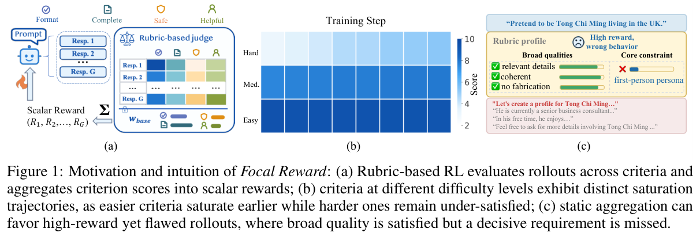
如图 1 所示，基于评分细则的 RL 通过难度各异的多种标准优化 LLM，而这些标准在训练过程中达到的饱和度也不同。流畅性或格式遵从等简单标准可能较早得到满足，而微妙权衡或细致的有用性等困难标准，往往在更长时间内仍未得到充分满足。静态标量化器可能无法跟踪这一不断变化的状态，继续强调已经饱和的标准，却低估仍有大量提升空间的标准。当广泛质量方面的增益主导标量奖励差值时，这可能使润色精良的 rollout 获得更高排名，即使它没有满足决定性的任务特定要求。因此，关键在于：策略优化之前，如何将标准级反馈标量化。
为解决静态标量化的这一失效模式，我们提出 Focal Reward，一种用于自动平衡基于评分细则奖励的强化学习的新型目标。Focal Reward 通过逆向奖励投影估计标准饱和度，并以此校准奖励方向：降低已饱和标准的侧重，增强提升空间较大标准的训练信号。随后，在将标准级反馈合成为用于策略优化的标量奖励之前，为其分配自适应重加权系数。特别地，Focal Reward 保持评审员、评分细则与策略优化框架不变，将干预限定在奖励合成步骤。
主要贡献概括如下：
- 我们识别出基于评分细则强化学习中的不均衡奖励极化。各标准以不同速度饱和时，静态标量化器可能继续奖励已经满足的维度，却不够重视仍有大量提升空间的标准。
- 我们提出具有理论依据的新型 Focal Reward 目标，自动平衡基于评分细则奖励的强化学习。它利用逆向奖励投影估计标准饱和度，再自适应重加权，减少对已饱和标准的侧重，增强对剩余提升空间较大标准的侧重。
- 我们在三种模型规模和六项基准上验证 Focal Reward，它在全部 18 个模型—基准组合中都超过最强静态聚合基线。在不同模型规模上，相对最强静态基线的平均增益为 +1.38 至 +2.50 分；rollout 分析、机制分析与消融分析支持在线、感知饱和度的重分配机制。
2 预备知识
典型的开放式生成评分细则强化学习包含两个核心部分：基于评分细则的判断，以及用于策略优化的奖励聚合，详细如下。
基于评分细则的判断。给定参数为 \(\theta\) 的 LLM 策略 \(\pi_\theta\)，以及开放式提示数据集 \(\mathcal D\)，策略针对每个提示 \(x\in\mathcal D\)，自回归生成一组 \(G\) 个候选 rollout：\(\mathcal Y=\{y_i\}_{i=1}^{G}\sim\pi_\theta(\cdot\mid x)\)。与可验证任务不同，开放式生成隐含地涉及多维评估。具体而言，典型的基于评分细则的判断引入包含 \(K\) 项标准的评分细则 \(\mathcal C=\{c^{(k)}\}_{k=1}^{K}\)，LLM 评审员为每个 \(y_i\) 提供标准级反馈。对于两个采样 rollout \(y_i\)、\(y_j\) 的有序比较，以 \(y_j\) 为参考，评审员对 \(y_i\) 打分，返回标准级分数向量 \(\mathbf s_{i,j}=J(x,y_i,y_j;\mathcal C)\in[0,S_{\max}]^K\)。其第 \(k\) 个分量 \(s_{i,j}^{(k)}\) 表示 \(y_i\) 在标准 \(c^{(k)}\) 上的得分，\(S_{\max}\) 通常预先指定，例如 10。
奖励聚合。为将标准级反馈转化为标量训练信号，现有方法主要依赖固定标量化器，即为各标准设置预定义权重或均匀权重。令 \(\mathbf w_{\mathrm{base}}=(w_{\mathrm{base}}^{(1)},\ldots,w_{\mathrm{base}}^{(K)})\) 表示静态权重向量，则判断计算为：
随后，通过聚合采样组内相应成对比较获得的分数构建奖励 [Zhang et al., 2026]，形式为：
其中，\(\operatorname{sgn}(\cdot)\) 是符号函数，\(\tau>0\) 表示强偏好阈值。\(\Phi_\tau(\Delta)\) 是计分函数，将每个成对差值 \(\Delta_{i,j}(\mathbf w)\) 转换为离散胜／负结果。遵循 GRPO [Shao et al., 2024]，每条 rollout 的标量奖励 \(R_i\) 被转换为组相对优势 \(\hat A_i\)，并通过以下正则化裁剪目标更新策略：
这里，\(r_{i,t}(\theta)\) 是相对于更新前策略的 token 级重要性比率，\(D_{\mathrm{KL}}\) 计算 KL 惩罚。策略优化的更多细节见附录 B。在这一框架下，策略更新最终由分配给采样 rollout 的标量奖励驱动。
3 方法
如引言所分析，直接优化静态标量化得到的奖励，会在不同评分标准之间诱发不均衡奖励极化。为应对这一挑战，我们引入新型 Focal Reward 方法，动态校准强化学习的侧重点。本节详细介绍该方法，随后进行理论分析。
3.1 Focal Reward
我们的想法受到 focal loss [Lin et al., 2017] 启发：该损失动态调整类别权重，强调被忽视的类别。但在技术设计上，我们的情况没有 focal loss 那样直接。为清晰起见，我们首先利用逆向奖励投影估计评分细则各标准的饱和度，再用饱和度动态平衡静态权重，最终影响强化学习中的奖励方向。
逆向奖励投影。对于每个采样 rollout 组，首先以适当温度 \(T>0\)，将公式（1）、（2）计算的奖励转化为 Gibbs 权重：
这样，每个 rollout 都对应一个基于奖励的权重 \(r_i\)。所有 rollout 都已按 \(K\) 项标准评估，因此可以利用 \(s_{i,j}^{(k)}\)，逆向计算这些 rollout 在每项标准上的平均分，再结合 \(\mathbf r\) 估计各标准的有效饱和度：
由于 \(\bar s_i^{(k)}\in[0,S_{\max}]\) 且 \(\sum_i r_i=1\)，可确保 \(P^{(k)}\in[0,1]\)。根据以上公式，我们将奖励逆向投影回各标准，以衡量这组 rollout 下的标准级饱和度。（续下页）
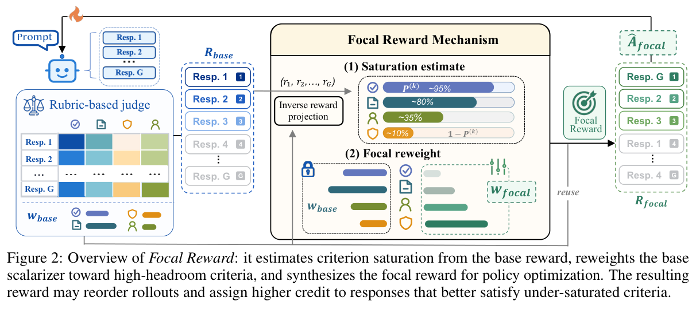
（接上页）有两点值得注意。第一，评分细则各标准的饱和度总体上与奖励正相关。即获得更高奖励的 rollout 组，往往也表现出更高的标准饱和度。第二，各项标准的饱和度未必与奖励提升保持相同进度。换言之，随着 RL 训练推进、奖励改善，不同标准的满足程度可能各异，甚至变得非常不均衡。我们的量 \(\mathbf P=(P^{(1)},\ldots,P^{(K)})\) 能够显式捕捉这一挑战。
焦点重加权聚合。利用 \(\mathbf P\) 表征所有标准的饱和度，Focal Reward 用依赖提升空间的因子 \(1-\mathbf P\)，调节评分细则的基础静态权重 \(\mathbf w_{\mathrm{base}}\)。具体而言，各标准的焦点权重设计如下：
这里，\(\epsilon>0\) 是平滑常数，\(\gamma>0\) 控制向较少饱和标准重分配的强度。由于 \(1-\mathbf P\) 估计前沿上剩余的提升空间，那些在当前高质量 rollout 前沿上仍然薄弱的标准，会获得更大的乘数。归一化保持基础标量化器的总权重质量，因此焦点重加权改变的是标准间相对侧重，而不会仅仅改变整体奖励尺度。得到 \(\mathbf w_{\mathrm{focal}}\) 后，我们构建以下最终强化学习奖励，再将其转换为优势，用于公式（3）：
这里，\(\Delta_{i,j}(\mathbf w_{\mathrm{focal}})\) 同样依据公式（1）计算，使用基础计算轮次中已获得的相同标准级成对分数 \(s_{i,j}^{(k)}\)。因此，考虑上述公式的计算，Focal Reward 的额外成本可以忽略。图 2 展示完整流程。
3.2 理论分析
本节提供理论分析，研究各标准饱和度不同时，如何将成对比较分数转换为标量奖励。限于篇幅，全部假设、推导和边界条件均置于附录 C。
定理 1（局部误分配界）。给定时间步 \(t\) 的训练状态，令 \(\mathbf a\in\mathbb R_+^K\) 为任意非零标准标量化器，\(\mathbf D_t\) 为任意标准级成对分数差向量，\(\mathbf a^\top\mathbf D_t\) 为标量化的成对差值，\(L_t\in\{+1,-1\}\) 为潜在的局部有用更新方向。在附录 C 的局部潜在标签假设下，有如下局部误分配界：
其中，\(\boldsymbol\eta_t\) 表示标准级学习信号，\(\ell\) 是潜在局部标签，\(\Sigma_t^{(\ell)}\) 刻画标签 \(\ell\) 下的残余标准级波动。
定理 1 表明，最大化 \(\Xi_t(\mathbf a)\) 可以减少局部成对贡献归因的误分配。\(\Xi_t(\mathbf a)\) 可解释为局部信噪比：分子偏好与有用的标准级学习信号对齐的标量化器，分母则惩罚那些差值被残余标准级变化主导的标量化器。
定理 2（静态聚合差距）。给定定理 1 的 \(\Xi_t(\mathbf a)\)，令 \(\mathbf a_t^\star\) 表示使其最大化的局部偏好标量化器，\(H_t^{(k)}\in[0,1]\) 表示时间步 \(t\) 时标准 \(c^{(k)}\) 的前沿剩余提升空间。在附录 C 的对称与各向同性简化，以及由提升空间塑造的优势模型下，偏好标准标量化器具有以下闭式方向，固定基础标量化器 \(\mathbf w_{\mathrm{base}}\) 则产生相应局部替代目标差距：
其中，\(\gamma_0>0\) 为曲率参数，\(\mu^{(k)}=\frac{(w_{\mathrm{base}}^{(k)})^2}{\|\mathbf w_{\mathrm{base}}\|_2^2}\)，\(\operatorname{Var}_{\boldsymbol\mu}(\cdot)\) 表示 \(\boldsymbol\mu\) 下的加权方差，\(c_t>0\) 是依赖状态的尺度，\(\sigma_t^2\) 是各向同性残余方差尺度。
定理 2 表明，当基础权重加权后的提升空间均匀时，方差项消失，因此 \(\mathbf w_{\mathrm{base}}\) 仍局部对齐偏好方向。当提升空间异质时，正方差项表明 \(\mathbf w_{\mathrm{base}}\) 遗漏了前沿提升空间因子。这与我们的设计对应：公式（6）采用 \(1-P^{(k)}\) 作为该潜在因子的代理量，而附录 C.4 通过证明 Gibbs 集中条件下 \(P^{(k)}\) 能估计前沿级饱和度，建立了代理量之间的联系。
4 实验
4.1 实验设置
骨干模型与基线。实验采用不同规模的多种 LLM，包括 Qwen2.5 系列（7B-Instruct）[Yang et al., 2024a] 与 Qwen3 系列（Qwen3-8B/30B-A3B）[Yang et al., 2025]。除原始模型外，我们还将 Focal Reward 与多种静态标量化基线比较，包括两种基于规则的基线：Veto [Huang et al., 2025] 使用由硬规则门控的聚合，Min-Score [Park et al., 2024a] 使用基于最低标准分数的瓶颈式权重；以及两种预设基线：Static (uniform) [Cui et al., 2024] 使用均匀权重，Static (prior) [Viswanathan et al., 2025, Gunjal et al., 2025] 使用 GPT-4o 预测的权重。我们将 Focal Reward 应用于这两类预设权重，得到 uniform 和 prior 两个版本。
实现细节。我们基于 verl 框架 [Sheng et al., 2025] 与 GSPO 算法 [Zheng et al., 2025] 实现方法，使用 32 块 H800-80GB GPU。主实验分别使用通用与科学领域的两个 OpenRubrics 10K 样本子集 [Liu et al., 2025b]。RL 训练中，全局 batch size 为 64，使用 AdamW，学习率为 \(10^{-6}\)。rollout 数 \(G=8\)，超参数 \(\gamma=2\)、\(T=10\)。评估时，通用领域模型在 AlpacaEval 2.0 [Dubois et al., 2024]、Arena Hard [Li et al., 2024]、WritingBench [Wu et al., 2025] 和 EQ-Bench 3 [Paech, 2023] 上评估；科学领域模型在 GPQA Diamond [Rein et al., 2024] 和 HealthBench [Arora et al., 2025] 上评估。更多训练细节与基准描述见附录 D。
4.2 主要结果
通用与科学领域基准性能。表 1 报告三种骨干模型在通用与科学导向基准上的结果。Focal Reward 在所有模型规模上都持续优于静态标量化。相对最强静态基线，Qwen2.5-7B-Instruct 的平均分最多提高 +2.19，Qwen3-8B 提高 +1.38，Qwen3-30B-A3B 提高 +2.50。这些增益同时出现在通用与科学导向基准上，表明 Focal Reward 合成提供了广泛有效的训练信号，并非只对某一领域或骨干模型有益。此外，基于 uniform 和 prior 权重的两种 Focal Reward 变体表现接近，且都超过既有奖励合成基线，说明它并不强烈依赖特定基础权重选择，能够稳健改善不同先验。
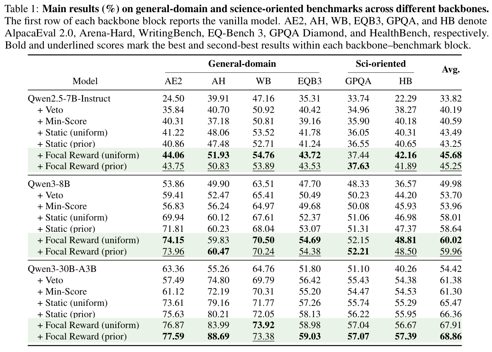
不同难度标准的性能。表 2 从评分细则层面进一步分析训练后模型，比较 Static 与 Focal Reward 在不同难度标准上的表现。按照图 3(a)，先用基础模型对训练提示进行推理，再按初始分数分布对标准分桶：低于 5 分视为困难标准，高于 8.5 分视为简单标准，其余为中等标准。相对 Static 标量化，Focal Reward 在困难标准上持续获得更高平均分和通过率，说明它有效强调了初始未被充分满足的标准。增益也延伸至中等标准，表明自适应重加权还改善了更广泛的评分方面。在简单标准上，Focal Reward 与 Static 表现相当，同时仍明显优于基础模型，说明困难标准上的增益没有以已满足维度为代价。此外，跨骨干模型与领域，Focal Reward 的 rollout 都显著短于 Static，表明它更高效地纠正未充分满足的标准，而非仅依赖更长、更精美的生成来获取奖励。
4.3 进一步分析
表 1、2 展示了 Focal Reward 的优越性能。我们进一步通过以下研究问题分析增益机制：（1）Focal Reward 如何在各评分标准间重分配权重？（2）这种重分配如何重塑奖励分布？（3）模型在目标标准上是否表现出可衡量改进？（4）Focal Reward 对先验权重选择有多敏感？
权重方面：更加侧重未充分满足的标准。图 3(b) 比较 Static prior 与 Focal Reward 下，标准权重和估计剩余提升空间的关系。纵轴越高，表示标准越未被充分满足；横轴越高，表示权重越大。在 Static prior 下，许多提升空间较大的标准仍获得较小权重，而部分提升空间较小的标准仍被高度强调，说明固定权重无法跟踪标准饱和度。相反，Focal Reward 将更多权重质量移向提升空间较大的标准，表明自适应权重能将训练重新聚焦到仍有大量提升空间的标准。
奖励方面：通过提升空间较大的标准获得更强区分能力。图 4(a) 分析焦点重加权之后 rollout 级奖励结果如何变化。Focal Reward 大体保留 Static prior 的行为，约 70% 样本的结果保持不变（位于对角线上），（续下页）
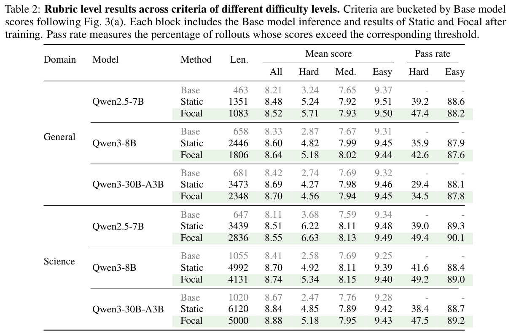
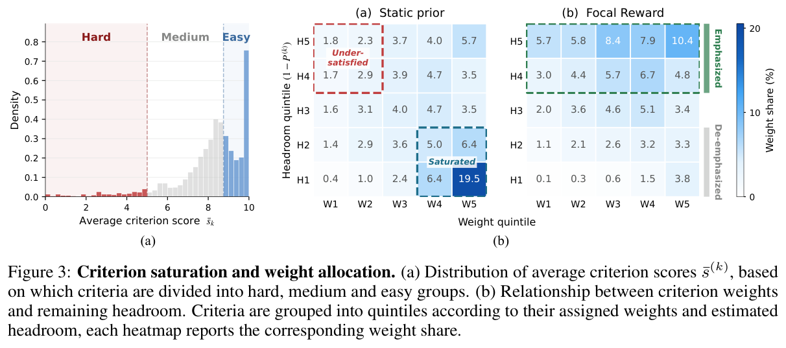
（接上页）表明整体奖励风格相似。与此同时，调整后的奖励更加极化：约 10% 样本从 +1 变为 +2，另约 10% 从 −1 变为 −2。这说明，通过更加重视未充分满足的标准，Focal Reward 使这些标准间差异更加明显，提高了奖励信号的区分能力。
优化方面：目标标准明显改善。图 4(b) 验证 Focal Reward 强调的标准是否真的在训练中改善。我们按估计剩余提升空间 \(1-P^{(k)}\)，将标准划分为五分位组，用相对基础模型的分数增益衡量各标准改进。静态标量化对提升空间较大标准只带来轻微改善，说明固定权重不足以充分利用这些未满足标准。相比之下，Focal Reward 呈现清晰的单调趋势：剩余提升空间越大，改进越大，其中提升空间最高组增益最强。这证实，重加权机制成功将感知提升空间的奖励校正，转化为有针对性的评分标准级优化。
先验方面：对不同基础标量化器的稳健性。图 4(c) 比较不同基础标量化器在焦点重加权后的演变。基础权重编码评审员对标准的先验侧重，因此会影响 rollout 奖励与下游性能。如图所示，Uniform 与 Prior 初始化在各提升空间水平上呈现明显不同的权重分布。（续下页）
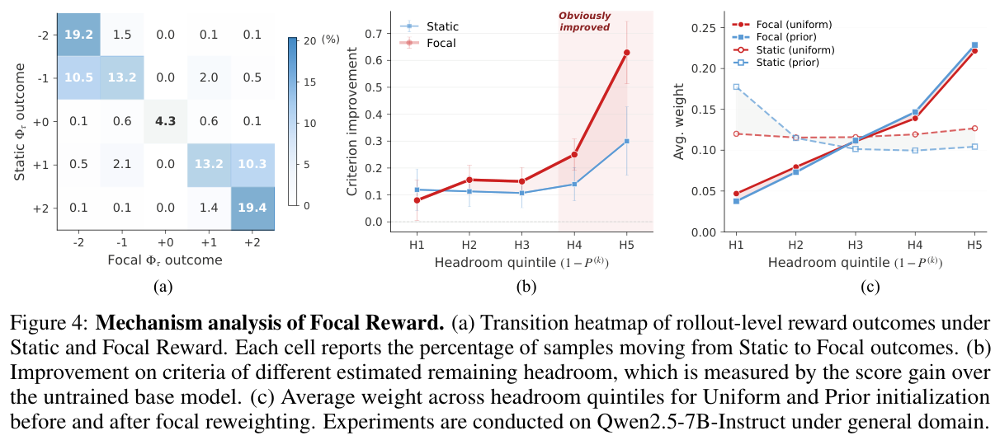
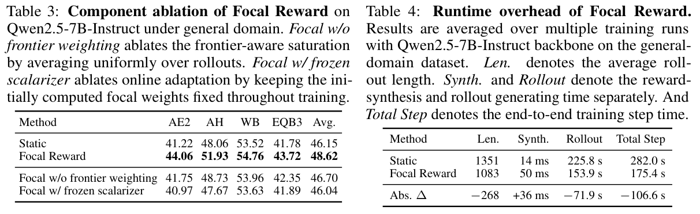
（接上页）有趣的是，尽管起点先验不同，Focal Reward 仍将权重推向高度相似的分布，余弦相似度约 0.9。两个变体都持续为提升空间较大的标准分配更大权重，展现出对基础权重的稳健性。
4.4 消融研究
Focal Reward 组件消融。表 3 研究关键组件的贡献。移除前沿加权后，平均分从 48.62 降至 46.70，说明应从高质量 rollout 前沿估计饱和度，而非对所有 rollout 均匀平均。冻结标量化器使分数进一步降至 46.04，说明固定奖励方向无法跟踪训练中不断变化的饱和状态。这些结果表明，感知前沿的估计与在线重加权，都是有效奖励重分配不可缺少的组件。
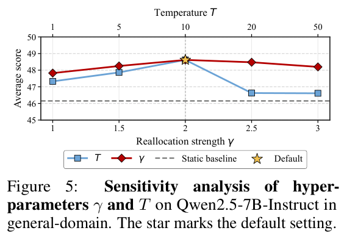
计算成本分析。表 4 表明，Focal Reward 相较 Static 基线仍具有计算效率。由于复用相同评分细则级判断，并只在奖励合成时应用轻量重加权，其引入的计算开销可以忽略。此外，Focal Reward 优化的模型在保持整体质量的同时生成更短 rollout，进一步降低生成成本和端到端训练开销。
超参数敏感性分析。图 5 分析 Focal Reward 对重分配强度 \(\gamma\) 和温度 \(T\) 的敏感性。在广泛取值范围内，它持续优于 Static，说明增益并不依赖狭窄的超参数选择。对于 \(\gamma\)，默认设置附近的性能保持稳定。对于 \(T\)，在 1 至 10 范围内也稳定，而温度过大可能过度平滑基于奖励的 rollout 权重，削弱饱和度估计，造成性能略降。总体而言，Focal Reward 在不同超参数配置下均表现稳健。
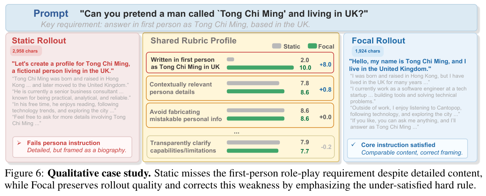
案例研究。图 6 给出图 1(c) 所讨论失效模式的定性示例。提示要求第一人称角色扮演，但 Static 仍为一条流畅、细节丰富的 rollout 赋予高排名，因为它在广泛质量标准上表现良好，却遗漏决定性的任务特定要求，即正确的第一人称表述。相反，Focal Reward 更侧重这项未被充分满足的标准，偏好遵循预期角色扮演格式的 rollout。该示例定性说明 Focal Reward 的核心机制：将奖励侧重重分配到仍有大量提升空间的标准，可以纠正奖励高但行为有缺陷的生成。更多示例与完整 rollout 见附录 F。
5 相关工作
基于评分细则的 RLAIF。开放式生成具有主观性和多维性，因此现代对齐往往利用基于评分细则的 AI 评审员，提供结构化、标准级反馈，而非整体性或不透明偏好信号 [Lee et al., 2024, Gunjal et al., 2025, Viswanathan et al., 2025]。既有工作探索了基于评分细则的奖励、检查清单、可扩展评分细则生成、感知上下文的标准、自适应成对评分细则，以及自适应评分细则学习 [Huang et al., 2025, Liu et al., 2025b, Gupta et al., 2025, Jia et al., 2026, Xu et al., 2026b]。这些研究主要改善评分细则如何构建、适配或评判。我们研究固定评分细则和评审员下的奖励合成，关注如何将标准级反馈聚合成策略优化所需的标量奖励。
动态奖励加权。基于评分细则强化学习中的奖励聚合可视为标量化问题，将标准级反馈压缩成用于策略优化的标量奖励。既有工作在更广泛的多目标对齐中研究了标量化与偏好折中 [Wang et al., 2024a, Zhou et al., 2024, He and Maghsudi, 2025]。近期方法进一步依据上下文或提示特定偏好调整权重 [Yang et al., 2024b, Liu et al., 2025a]，或依据优化状态、学习潜力与目标冲突调整 [Lu et al., 2025, Chen et al., 2026a]。这些方法主要在高层目标或偏好维度间调整权重，而对固定评分细则、固定评审员下的细粒度标准级聚合问题探索较少。附录 G 讨论更多相关工作。
6 结论
本文提出 Focal Reward，一种自动平衡基于评分细则奖励强化学习的新型目标。它解决静态标量化器造成的不均衡奖励极化：静态标量化器可能继续强调已满足标准，却低估仍有大量提升空间的标准。Focal Reward 通过逆向奖励投影估计标准级饱和度，自适应将奖励侧重从已饱和标准重新分配到提升空间较大的标准，从而在策略优化之前校准奖励方向。大量实验和分析展示其有效性，表明奖励区分能力改善，并获得有针对性的评分标准级增益。这些发现突出说明，自适应奖励合成对于开放式生成的有效策略优化至关重要。
参考文献
Rahul K. Arora, Jason Wei, Rebecca Soskin Hicks, Preston Bowman, Joaquin Quiñonero-Candela, Foivos Tsimpourlas, Michael Sharman, Meghan Shah, Andrea Vallone, Alex Beutel, Johannes Heidecke, and Karan Singhal. HealthBench：评估大语言模型以改善人类健康. CoRR, 2025. URL https://arxiv.org/abs/2505.08775.
Dongliang Chen, Xinlin Zhuang, Junjie Xu, Luojian Xie, Zehui Wang, Jiaxi Zhuang, Haolin Yang, Liang Dou, Xiao He, Xingjiao Wu, and Ying Qian. APEX：为视觉语言生成中的多目标对齐学习自适应优先级. CoRR, 2026a. URL https://arxiv.org/abs/2601.06574.
Peter L. Chen, Xiaopeng Li, Xi Chen, and Tianyi Lin. 冲突目标的无奖励对齐. CoRR, 2026b. URL https://arxiv.org/abs/2602.02495.
Ganqu Cui, Lifan Yuan, Ning Ding, Guanming Yao, Bingxiang He, Wei Zhu, Yuan Ni, Guotong Xie, Ruobing Xie, Yankai Lin, Zhiyuan Liu, and Maosong Sun. UltraFeedback：通过规模化 AI 反馈增强语言模型. In Forty-first International Conference on Machine Learning, ICML 2024, Vienna, Austria, July 21-27, 2024, 2024.
Yann Dubois, Balázs Galambosi, Percy Liang, and Tatsunori B. Hashimoto. 长度受控的 AlpacaEval：消除自动评估器偏差的简单方法. In Proceedings of the Conference on Language Modeling (COLM 2024), 2024. URL https://openreview.net/forum?id=CybBmzWBX0.
Anisha Gunjal, Anthony Wang, Elaine Lau, Vaskar Nath, Yunzhong He, Bing Liu, and Sean Hendryx. 以评分细则为奖励：超越可验证领域的强化学习. CoRR, 2025. URL https://arxiv.org/abs/2507.17746.
Taneesh Gupta, Shivam Shandilya, Xuchao Zhang, Rahul Madhavan, Supriyo Ghosh, Chetan Bansal, Huaxiu Yao, and Saravan Rajmohan. CARMO：通过动态标准生成实现感知上下文的奖励建模. In Findings of the Association for Computational Linguistics: ACL 2025, pages 2202–2261. Association for Computational Linguistics, 2025. URL https://aclanthology.org/2025.findings-acl.114/.
Qiang He and Setareh Maghsudi. 语言模型的 Pareto 多目标对齐. In Machine Learning and Knowledge Discovery in Databases. Research Track. European Conference, ECML PKDD 2025, 2025. URL https://ecmlpkdd-storage.s3.eu-central-1.amazonaws.com/preprints/2025/research/preprint_ecml_pkdd_2025_research_141.pdf.
Yun He, Wenzhe Li, Hejia Zhang, Songlin Li, Karishma Mandyam, Sopan Khosla, Yuanhao Xiong, Nanshu Wang, Xiaoliang Peng, Beibin Li, Shengjie Bi, Shishir G. Patil, Qi Qi, Shengyu Feng, Julian Katz-Samuels, Richard Yuanzhe Pang, Sujan Gonugondla, Hunter Lang, Yue Yu, Yundi Qian, Maryam Fazel-Zarandi, Licheng Yu, Amine Benhalloum, Hany Awadalla, and Manaal Faruqui. AdvancedIF：通过基于评分细则的基准评估与强化学习推进 LLM 指令遵循. CoRR, 2025. URL https://arxiv.org/abs/2511.10507.
Xinyu Hu, Mingqi Gao, Sen Hu, Yang Zhang, Yicheng Chen, Teng Xu, and Xiaojun Wan. 基于 LLM 的评估器是否混淆了 NLG 质量标准？ In Proceedings of the 62nd Annual Meeting of the Association for Computational Linguistics (Volume 1: Long Papers), pages 9530–9570, Bangkok, Thailand, August 2024. Association for Computational Linguistics. doi: 10.18653/v1/ 2024.acl-long.516. URL https://aclanthology.org/2024.acl-long.516/.
Zenan Huang, Yihong Zhuang, Guoshan Lu, Zeyu Qin, Haokai Xu, Tianyu Zhao, Ru Peng, Jiaqi Hu, Zhanming Shen, Xiaomeng Hu, Xijun Gu, Peiyi Tu, Jiaxin Liu, Wenyu Chen, Yuzhuo Fu, Zhiting Fan, Yanmei Gu, Yuanyuan Wang, Zhengkai Yang, Jianguo Li, and Junbo Zhao. 使用评分细则锚点的强化学习. CoRR, 2025. URL https://arxiv.org/abs/2508.12790.
Ruipeng Jia, Yunyi Yang, Yongbo Gai, Kai Luo, Shihao Huang, Jianhe Lin, Xiaoxi Jiang, and Guanjun Jiang. Writing-Zero：弥合不可验证任务与可验证奖励之间的差距. arXiv preprint arXiv:2506.00103, 2025. URL https://arxiv.org/abs/2506.00103.
Ruipeng Jia, Yunyi Yang, Yuxin Wu, Yongbo Gai, Siyuan Tao, Mengyu Zhou, Jianhe Lin, Xiaoxi Jiang, and Guanjun Jiang. 开放评分细则系统：通过成对自适应评分细则扩展强化学习. CoRR, 2026. URL https://arxiv.org/abs/2602.14069.
Pei Ke, Bosi Wen, Andrew Feng, Xiao Liu, Xuanyu Lei, Jiale Cheng, Shengyuan Wang, Aohan Zeng, Yuxiao Dong, Hongning Wang, Jie Tang, and Minlie Huang. CritiqueLLM：迈向用于评估大语言模型生成的信息丰富的评议生成模型. In Proceedings of the 62nd Annual Meeting of the Association for Computational Linguistics (Volume 1: Long Papers), pages 13034–13054, Bangkok, Thailand, August 2024. Association for Computational Linguistics. doi: 10.18653/v1/2024.acl-long.704. URL https://aclanthology.org/2024.acl-long.704/.
Seungone Kim, Jamin Shin, Yejin Choi, Joel Jang, Shayne Longpre, Hwaran Lee, Sangdoo Yun, Seongjin Shin, Sungdong Kim, James Thorne, and Minjoon Seo. Prometheus：激发语言模型的细粒度评估能力. In The Twelfth International Conference on Learning Representations, 2024. URL https://openreview.net/forum?id=8euJaTveKw.
Harrison Lee, Samrat Phatale, Hassan Mansoor, Thomas Mesnard, Johan Ferret, Kellie Ren Lu, Colton Bishop, Ethan Hall, Victor Carbune, Abhinav Rastogi, and Sushant Prakash. RLAIF 与 RLHF：利用 AI 反馈扩展基于人类反馈的强化学习. In Ruslan Salakhutdinov, Zico Kolter, Katherine Heller, Adrian Weller, Nuria Oliver, Jonathan Scarlett, and Felix Berkenkamp, editors, Proceedings of the 41st International Conference on Machine Learning, volume 235 of Proceedings of Machine Learning Research, pages 26874–26901. PMLR, 2024. URL https://proceedings.mlr.press/v235/lee24t.html.
Tianle Li, Wei-Lin Chiang, Evan Frick, Lisa Dunlap, Tianhao Wu, Banghua Zhu, Joseph E. Gonzalez, and Ion Stoica. 从众包数据到高质量基准：Arena-Hard 与 BenchBuilder 流水线. arXiv preprint arXiv:2406.11939, 2024. URL https://arxiv.org/abs/2406.11939.
Tsung-Yi Lin, Priya Goyal, Ross Girshick, Kaiming He, and Piotr Dollar. 用于稠密目标检测的 focal loss. In Proceedings of the IEEE International Conference on Computer Vision (ICCV), pages 2980–2988, October 2017. URL https://openaccess.thecvf.com/content_iccv_2017/html/Lin_Focal_Loss_for_ICCV_2017_paper.html.
Biao Liu, Ning Xu, Junming Yang, and Xin Geng. Preference Orchestrator：感知提示的大语言模型多目标对齐. CoRR, 2025a. URL https://arxiv.org/abs/2511.10656.
Jiawei Liu and Lingming Zhang. Code-R1：通过可靠奖励复现用于代码的 R1. https://github.com/ganler/code-r1, 2025. URL https://github.com/ganler/code-r1.
Tianci Liu, Ran Xu, Tony Yu, Ilgee Hong, Carl Yang, Tuo Zhao, and Haoyu Wang. OpenRubrics：迈向用于奖励建模与 LLM 对齐的可扩展合成评分细则生成. CoRR, 2025b. URL https://arxiv.org/abs/2510.07743.
Yang Liu, Dan Iter, Yichong Xu, Shuohang Wang, Ruochen Xu, and Chenguang Zhu. G-EVAL：使用 GPT-4 实现与人类更一致的 NLG 评估. In Proceedings of the 2023 Conference on Empirical Methods in Natural Language Processing, pages 2511–2522. Association for Computational Linguistics, December 2023. doi: 10.18653/v1/2023.emnlp-main.153. URL https://aclanthology.org/2023.emnlp-main.153/.
Yining Lu, Zilong Wang, Shiyang Li, Xin Liu, Changlong Yu, Qingyu Yin, Zhan Shi, Zixuan Zhang, and Meng Jiang. 通过动态奖励加权学习优化多目标对齐. CoRR, 2025. URL https://arxiv.org/abs/2509.11452.
Subhojyoti Mukherjee, Anusha Lalitha, Sailik Sengupta, Aniket Deshmukh, and Branislav Kveton. 通过超体积最大化实现大语言模型多目标对齐. CoRR, 2024. URL https://arxiv.org/abs/2412.05469.
Samuel J. Paech. EQ-Bench：大语言模型的情绪智能基准. CoRR, 2023. URL https://arxiv.org/abs/2312.06281.
Arjun Panickssery, Samuel R. Bowman, and Shi Feng. LLM 评估器识别并偏好自身生成内容. In Advances in Neural Information Processing Systems 37 (NeurIPS 2024), 2024. doi: 10.52202/079017-2197. URL https://proceedings.neurips.cc/paper_files/paper/2024/hash/7f1f0218e45f5414c79c0679633e47bc-Abstract-Conference.html.
Giseung Park, Woohyeon Byeon, Seongmin Kim, Elad Havakuk, Amir Leshem, and Youngchul Sung. 多目标强化学习的最大最小形式：从理论到无模型算法. In Ruslan Salakhutdinov, Zico Kolter, Katherine Heller, Adrian Weller, Nuria Oliver, Jonathan Scarlett, and Felix Berkenkamp, editors, Proceedings of the 41st International Conference on Machine Learning, volume 235 of Proceedings of Machine Learning Research, pages 38809– 38834. PMLR, 2024a. URL https://proceedings.mlr.press/v235/park24b.html.
Junsoo Park, Seungyeon Jwa, Ren Meiying, Daeyoung Kim, and Sanghyuk Choi. OffsetBias：利用去偏数据微调评估器. In Yaser Al-Onaizan, Mohit Bansal, and Yun-Nung Chen, editors, Findings of the Association for Computational Linguistics: EMNLP 2024, pages 1043–1067, Miami, Florida, USA, November 2024b. Association for Computational Linguistics. doi: 10.18653/v1/2024.findings-emnlp.57. URL https://aclanthology.org/2024.findings-emnlp.57/.
David Rein, Betty Li Hou, Asa Cooper Stickland, Jackson Petty, Richard Yuanzhe Pang, Julien Dirani, Julian Michael, and Samuel R. Bowman. GPQA：研究生级、无法依赖 Google 搜索作答的问答基准. In Proceedings of the Conference on Language Modeling (COLM 2024), 2024. URL https://openreview.net/forum?id=Ti67584b98.
Zhihong Shao, Peiyi Wang, Qihao Zhu, Runxin Xu, Junxiao Song, Xiao Bi, Haowei Zhang, Mingchuan Zhang, Y. K. Li, Yang Wu, Daya Guo, Xinyuan Chen, Y. Wu Zhang, Peng Fu, Jing Luo, Xuefeng Li, S. Zhang Nie, Ben Zhang, Zhigang Liu, Zijun Liang, Ji Wu, Xuanhua Guo, Le Chen, and Dahua Lou. DeepSeekMath：推进开放语言模型的数学推理极限. arXiv preprint arXiv:2402.03300, 2024. URL https://arxiv.org/abs/2402.03300.
William F. Shen, Xinchi Qiu, Chenxi Whitehouse, Lisa Alazraki, Shashwat Goel, Francesco Barbieri, Timon Willi, Akhil Mathur, and Ilias Leontiadis. 重新思考评分细则生成，以改善开放式任务的 LLM 评审员与奖励建模. CoRR, 2026. URL https://arxiv.org/abs/2602.05125.
Yiran Shen, Yu Xia, Jonathan Chang, and Prithviraj Ammanabrolu. 跨可验证与不可验证奖励的同时多目标对齐. arXiv preprint arXiv:2510.01167, 2025. URL https://arxiv.org/abs/2510.01167.
Guangming Sheng, Chi Zhang, Zilingfeng Ye, Xibin Wu, Wang Zhang, Ru Zhang, Yanghua Peng, Haibin Lin, and Chuan Wu. HybridFlow：灵活且高效的 RLHF 框架. In Proceed-ings of the Twentieth European Conference on Computer Systems, Rotterdam, The Netherlands, March 2025. doi: 10.1145/3689031.3696075. URL https://i2.cs.hku.hk/~cwu/papers/gmsheng-eurosys25.pdf.
Lin Shi, Chiyu Ma, Wenhua Liang, Xingjian Diao, Weicheng Ma, and Soroush Vosoughi. 评判评审员：LLM-as-a-Judge 位置偏差的系统研究. In Proceedings of the 14th International Joint Conference on Natural Language Processing and the 4th Conference of the Asia-Pacific Chapter of the Association for Computational Linguistics, pages 292–314, Mumbai, India, 2025. The Asian Federation of Natural Language Processing and The Association for Computational Linguistics. doi: 10.18653/v1/2025.ijcnlp-long.18. URL https://aclanthology.org/2025.ijcnlp-long.18/.
Rickard Stureborg, Dimitris Alikaniotis, and Yoshi Suhara. 大语言模型是判断不一致且有偏差的评估器, 2024. URL https://arxiv.org/abs/2405.01724.
Yi Su, Dian Yu, Linfeng Song, Juntao Li, Haitao Mi, Zhaopeng Tu, Min Zhang, and Dong Yu. 跨越奖励桥梁：将基于可验证奖励的 RL 扩展至不同领域. arXiv preprint arXiv:2503.23829, 2025. URL https://arxiv.org/abs/2503.23829.
Vijay Viswanathan, Yanchao Sun, Shuang Ma, Xiang Kong, Meng Cao, Graham Neubig, and Tongshuang Wu. 检查清单在语言模型对齐中优于奖励模型. CoRR, 2025. URL https://arxiv.org/abs/2507.18624.
Haoxiang Wang, Wei Xiong, Tengyang Xie, Han Zhao, and Tong Zhang. 通过多目标奖励建模与 MoE 实现可解释偏好. In Yaser Al-Onaizan, Mohit Bansal, and Yun-Nung Chen, editors, Findings of the Association for Computational Linguistics: EMNLP 2024, pages 10582–10592, Miami, Florida, USA, November 2024a. Association for Computational Linguistics. doi: 10.18653/v1/2024.findings-emnlp.620. URL https://aclanthology.org/2024.findings-emnlp.620/.
Peiyi Wang, Lei Li, Liang Chen, Zefan Cai, Dawei Zhu, Binghuai Lin, Yunbo Cao, Lingpeng Kong, Qi Liu, Tianyu Liu, and Zhifang Sui. 大语言模型不是公正的评估器. In Proceedings of the 62nd Annual Meeting of the Association for Computational Linguistics (Volume 1: Long Papers), pages 9440–9450, Bangkok, Thailand, August 2024b. Association for Computational Linguistics. doi: 10.18653/v1/2024.acl-long.511. URL https://aclanthology.org/2024.acl-long.511/.
Pengkai Wang, Qi Zuo, Pengwei Liu, Zhijie Sang, Congkai Xie, and Hongxia Yang. InfiMed-Orbit：通过基于评分细则的增量训练，在开放式复杂任务上对齐 LLM. CoRR, 2025. URL https://arxiv.org/abs/2510.15859.
Yidong Wang, Zhuohao Yu, Wenjin Yao, Zhengran Zeng, Linyi Yang, Cunxiang Wang, Hao Chen, Chaoya Jiang, Rui Xie, Jindong Wang, Xing Xie, Wei Ye, Shikun Zhang, and Yue Zhang. PandaLM：用于优化 LLM 指令微调的自动评估基准. In The Twelfth International Conference on Learning Representations, 2024c. URL https://openreview.net/forum?id=5Nn2BLV7SB.
Mian Wu, Gavin Zhang, Sewon Min, Sergey Levine, and Aviral Kumar. RLAC：面向自由形式生成任务、采用对抗 critic 的强化学习. In The Fourteenth International Conference on Learning Representations (ICLR 2026), 2026. URL https://openreview.net/forum?id=dBmjnRR1bC.
Yuning Wu, Jiahao Mei, Ming Yan, Chenliang Li, Shaopeng Lai, Yuran Ren, Zijia Wang, Ji Zhang, Mengyue Wu, Qin Jin, and Fei Huang. WritingBench：生成式写作的综合基准. CoRR, 2025. URL https://arxiv.org/abs/2503.05244.
Lipeng Xie, Sen Huang, Zhuo Zhang, Anni Zou, Yunpeng Zhai, Dingchao Ren, Kezun Zhang, Haoyuan Hu, Boyin Liu, Haoran Chen, Zhaoyang Liu, and Bolin Ding. Auto-Rubric：从隐式权重学习显式评分细则，用于奖励建模, 2026. URL https://arxiv.org/abs/2510.17314.
Ran Xu, Tianci Liu, Zihan Dong, Tony Yu, Ilgee Hong, Carl Yang, Linjun Zhang, Tao Zhao, and Haoyu Wang. 在不可验证的 LLM 后训练中，交替强化学习用于基于评分细则的奖励建模. CoRR, 2026a. URL https://arxiv.org/abs/2602.01511.
Yifei Xu, Guilherme Potje, Shivam Shandilya, Tiancheng Yuan, Leonardo de Oliveira Nunes, Rak-shanda Agarwal, Saeid Asgari, Adam Atkinson, Emre Kıçiman, Songwu Lu, Ranveer Chandra, and Tusher Chakraborty. SibylSense：通过记忆调优与对抗探测进行自适应评分细则学习. CoRR, 2026b. URL https://arxiv.org/abs/2602.20751.
An Yang, Baosong Yang, Beichen Zhang, Binyuan Hui, Bo Zheng, Bowen Yu, Chengyuan Li, Dayiheng Liu, Fei Huang, Haoran Wei, Huan Lin, Jian Yang, Jianhong Tu, Jianwei Zhang, Jianxin Yang, Jiaxi Yang, Jingren Zhou, Junyang Lin, Kai Dang, Keming Lu, Keqin Bao, Kexin Yang, Le Yu, Mei Li, Mingfeng Xue, Pei Zhang, Qin Zhu, Rui Men, Runji Lin, Tianhao Li, Tingyu Xia, Xingzhang Ren, Xuancheng Ren, Yang Fan, Yang Su, Yichang Zhang, Yu Wan, Yuqiong Liu, Zeyu Cui, Zhenru Zhang, and Zihan Qiu. Qwen2.5 技术报告. CoRR, 2024a. URL https://arxiv.org/abs/2412.15115.
An Yang, Anfeng Li, Baosong Yang, Beichen Zhang, Binyuan Hui, Bo Zheng, Bowen Yu, Chang Gao, Chengen Huang, Chenxu Lv, et al. Qwen3 技术报告. arXiv preprint arXiv:2505.09388, 2025. URL https://arxiv.org/abs/2505.09388.
Rui Yang, Xiaoman Pan, Feng Luo, Shuang Qiu, Han Zhong, Dong Yu, and Jianshu Chen. Rewards-in-Context：通过动态偏好调整实现基础模型多目标对齐. In Proceedings of the 41st International Conference on Machine Learning, pages 56276–56297, 2024b. URL https://arxiv.org/abs/2402.10207.
Qiang Zhang, Boli Chen, Fanrui Zhang, Ruixue Ding, Shihang Wang, Qiuchen Wang, Yinfeng Huang, Haonan Zhang, Rongxiang Zhu, Pengyong Wang, Ailin Ren, Xin Li, Pengjun Xie, Jiawei Liu, Ning Guo, Jingren Zhou, and Zheng-Jun Zha. ArenaRL：通过基于锦标赛的相对排名扩展开放式 agent 的 RL. CoRR, 2026. URL https://arxiv.org/abs/2601.06487.
Chujie Zheng, Shixuan Liu, Mingze Li, Xiong-Hui Chen, Bowen Yu, Chang Gao, Kai Dang, Yuqiong Liu, Rui Men, An Yang, Jingren Zhou, and Junyang Lin. 组序列策略优化. arXiv preprint arXiv:2507.18071, 2025. URL https://arxiv.org/abs/2507.18071.
Zhanhui Zhou, Jie Liu, Jing Shao, Xiangyu Yue, Chao Yang, Wanli Ouyang, and Yu Qiao. 超越单一偏好适用所有情况的对齐：多目标直接偏好优化. In Lun-Wei Ku, Andre Martins, and Vivek Srikumar, editors, Findings of the Association for Com-putational Linguistics: ACL 2024, pages 10586–10613, Bangkok, Thailand, August 2024. Association for Computational Linguistics. doi: 10.18653/v1/2024.findings-acl.630. URL https://aclanthology.org/2024.findings-acl.630/.
Lianghui Zhu, Xinggang Wang, and Xinlong Wang. JudgeLM：微调后的大语言模型是可扩展评审员. In The Thirteenth International Conference on Learning Representations, 2025. URL https://openreview.net/forum?id=xsELpEPn4A.
附录
目录
A 局限性与更广泛影响
局限性。Focal Reward 作用于标准级评审分数，因此与基于评分细则的 RL 中通常的情况一样，能从校准良好的评分反馈中受益。如果评审员混淆标准、表现出系统性偏差，或给出校准较差的绝对分数，估计饱和度可能继承这些误差，影响重加权结果。实验中，我们通过对所有方法保持评审员和评分细则固定、使用成对标准级评分，以及跨多个基准和模型规模评估，缓解这一问题。理论旨在刻画局部奖励分配机制，而非对具有非平稳 LLM 策略的大规模 RL 进行完整收敛分析。该范围与本文实证重点一致：通过 rollout 级分析、机制级分析和消融分析评估方法。Focal Reward 只增加轻量奖励合成计算，但由于 rollout 生成与评分细则评判，整体 RL 后训练流水线仍然消耗大量资源。
更广泛影响。Focal Reward 鼓励跨不同评分标准进行优化，而不是让训练集中于已经满足的维度，可能有助于构建更均衡、可靠且与人类对齐的开放式语言模型系统。通过向未充分满足标准重分配奖励侧重，它能够改善模型 rollout 的整体质量与一致性；当评分细则显式纳入指令遵循、安全约束、事实依据、领域特定完整性和公平性等困难要求时，尤其如此。这可能有助于减少真实面向用户场景中不均衡的模型行为，因为流畅或格式良好的回复仍可能遗漏重要要求。更广泛地说，感知饱和度的奖励合成，为使评分细则 RL 更均衡、可诊断提供实用机制，允许开发者识别哪些质量维度仍未充分优化，并相应调整训练压力。
同时，Focal Reward 也继承了生成标准级分数所用评分细则和评审员的局限与风险。如果评分细则遗漏重要的安全、隐私或公平性标准，或评审员系统性地错误校准某些标准，自适应重加权可能在训练中放大这些不完整或有偏信号。更强大的开放式生成系统若缺少适当防护，也可能被滥用于生成误导性、低质量或有害内容。实际缓解策略包括训练前审查评分细则、评估评审员的校准与偏差、显式纳入安全与公平性标准，并在部署后监控下游模型行为。
B GRPO 的补充细节
我们遵循 Shao et al. [2024] 的 GRPO 形式。给定提示 \(x\in\mathcal D\)，旧策略 \(\pi_{\theta_{\mathrm{old}}}\) 采样一组 \(G\) 个候选 rollout：\(\mathcal Y=\{y_i\}_{i=1}^{G}\sim\pi_{\theta_{\mathrm{old}}}(\cdot\mid x)\)。经过基于评分细则的判断与奖励聚合，每个 \(y_i\) 获得标量奖励 \(R_i\)。GRPO 使用同一采样组内的相对奖励估计优势，无需学习额外价值函数：
由于 \(R_i\) 在 rollout 级分配，\(y_i\) 内全部 token 使用相同优势 \(\hat A_i\)。
对于每个生成 token \(y_{i,t}\)，token 级重要性比率定义为：
随后，用公式（3）的裁剪目标优化策略。遵循 GRPO，KL 惩罚在 token 级估计为：
在我们的设置中，Static 聚合与 Focal Reward 的唯一区别，是如何将标准级反馈合成为标量 rollout 奖励 \(R_i\)。得到 \(R_i\) 后，两者使用相同的（续下页）
（接上页）公式（8）的组相对归一化、公式（9）的 token 级比率，以及公式（3）的裁剪策略优化目标。因此，Focal Reward 在保持 GRPO 优化过程不变的同时，于策略优化之前改变奖励方向。
C Focal Reward 的补充理论细节
本附录补充第 3.2 节。正文只陈述关键局部结论：定理 1 给出成对误分配界，为替代目标 \(\Xi_t(\mathbf a)\) 提供动机；定理 2 刻画相对于感知提升空间偏好方向的静态聚合差距。这里，我们给出正式的局部潜在标签模型，推导误分配界，证明闭式偏好方向与静态差距，再讨论实际实现的饱和度统计量所涉及的代理量联系与可识别性边界。
C.1 局部潜在标签模型
给定时间步 \(t\) 的训练状态，下文所有概率和期望都针对以下变量与潜在标签 \(L_t\in\{+1,-1\}\) 的联合分布计算：
对每个有序对 \((i,j)\)，定义标准级成对分数差向量：
随机有序对诱导出随机标准级分数差向量：
对任意非负标量化器 \(\mathbf a\in\mathbb R_+^K\)，标量化成对差值为 \(\mathbf a^\top\mathbf D_t\)。
潜在变量 \(L_t\in\{+1,-1\}\) 指出，时间步 \(t\) 时成对贡献归因的哪个方向，对局部策略改进更有用。分析采用以下假设。
（A1）正学习优势。存在 \(\boldsymbol\eta_t\in\mathbb R_+^K\)，满足：
（A2）由提升空间塑造的优势。存在潜在前沿饱和度 \(q_t^{(k)}\in[0,1]\)、潜在前沿剩余提升空间 \(H_t^{(k)}:=1-q_t^{(k)}\)，以及常数 \(c_t>0\)、\(\gamma_0>0\)，满足：
（A3）代理次高斯残差。定义残差：
对每个 \(\ell\in\{+1,-1\}\)，存在对称正定矩阵 \(\Sigma_t^{(\ell)}\succ0\)，使得：
因此，\(\Sigma_t^{(\ell)}\) 是条件次高斯代理矩阵，不一定等于 \(\boldsymbol\zeta_t\) 的真实条件协方差。该假设仅用作推导局部界的代理尾部条件。实践中标准级分数有界，因此可以用次高斯代理矩阵控制残余波动；该矩阵可以吸收评审偏差、标准间相关性和提示级变化。
假设讨论。假设（A1）引入局部正学习优势，使我们能将成对贡献归因误分配定义为：标量化差值符号与 \(L_t\) 不一致的事件。假设（A3）控制该优势周围的残余波动，导出定理 1 的指数界。假设（A2）用于定理 2，将偏好标量化器方向与前沿剩余提升空间联系起来。这些假设共同为以下做法提供局部依据：把奖励权重从已饱和标准重分配到仍有较大提升空间的标准。
C.2 定理 1 的证明：从误分配界到局部替代目标
我们推导第 3.2 节使用的局部替代目标。在附录 C.1 的局部潜在标签模型下，当标量化差值 \(\mathbf a^\top\mathbf D_t\) 的符号与潜在局部有用方向 \(L_t\) 不一致时，标量化器可能错误分配成对贡献归因。以下证明建立定理 1 的指数界，从而自然引出最大化替代目标 \(\Xi_t(\mathbf a)\) 的动机。
重述定理 1。假设（A1）、（A3）成立。对任意非零 \(\mathbf a\in\mathbb R_+^K\)，
等价地，
证明。为简洁起见，记：
固定一个非零标量化器 \(\mathbf a\in\mathbb R_+^K\)。由于 \(\mathbf a\in\mathbb R_+^K\)、\(\boldsymbol\eta\in\mathbb R_+^K\)，标量
满足 \(\nu\ge0\)。若 \(\nu=0\)，则（17）右侧为 1；由于概率至多为 1，结论显然成立。因此，下面假定 \(\nu>0\)。
首先，以事件 \(\{L=+1\}\) 为条件。由（A1），
由于 \(\boldsymbol\zeta=\mathbf D-L\boldsymbol\eta\)，在 \(\{L=+1\}\) 上有：
因此，
对任意 \(\lambda>0\)，Markov 不等式给出：
取 \(\mathbf u=-\lambda\mathbf a\)，应用（A3）得：
因此，
在 \(\lambda>0\) 上，指数于以下取值达到最小：
由于 \(\Sigma_{+1}\succ0\)、\(\mathbf a\ne0\)，分母为正。代入得：
现在以事件 \(\{L=-1\}\) 为条件。由（A1），
由于 \(\boldsymbol\zeta=\mathbf D-L\boldsymbol\eta\)，在 \(\{L=-1\}\) 上有：
于是，
同样，对任意 \(\lambda>0\)，Markov 不等式给出：
取 \(\mathbf u=\lambda\mathbf a\)，应用（A3）得到：
因此，
在 \(\lambda>0\) 上优化，得到：
因此，
最后，由全概率公式，
将该恒等式与（19）、（20）结合，得到：
由于指数函数单调，且分子不依赖 \(\ell\)，这变为：
回到原始带 \(t\) 索引的记号，得到：
这就证明了（17）。等价形式（18）来自恒等式：
定义：
该界可写为：
因此，降低这一指数上界，等价于最大化局部替代目标 \(\Xi_t(\mathbf a)\)，即正文所用替代目标。□
这引出了下一步：在额外局部简化下，刻画使 \(\Xi_t(\mathbf a)\) 最大化的标量化器。
C.3 定理 2 的证明：静态差距与感知提升空间的方向
现在，我们证明感知提升空间的闭式偏好方向，以及静态聚合由此产生的局部替代目标差距。本证明对应正文定理 2。
重述定理 2。给定定理 1 的局部替代目标 \(\Xi_t(\mathbf a)\)，令 \(\mathbf a_t^\star\) 表示使其最大化的局部偏好标量化器。在附录 C.1 的对称与各向同性简化，以及由提升空间塑造的优势模型下，偏好标量化器具有闭式方向：
相对这一方向，固定基础标量化器 \(\mathbf w_{\mathrm{base}}\) 产生的局部替代目标差距为：
其中，
这里，\(\mathbf H_t^{\gamma_0}\) 表示第 \(k\) 个分量为 \((H_t^{(k)})^{\gamma_0}\) 的向量。
证明。证明分两部分。首先，刻画 \(\Xi_t(\mathbf a)\) 诱导的局部偏好方向。其次，将其与固定基础标量化器 \(\mathbf w_{\mathrm{base}}\) 比较。
第一部分：局部偏好方向。在对称残差简化下，
局部替代目标变为：
为简洁起见，记：
对于任意非零 \(\mathbf a\in\mathbb R^K\)，定义：
则：
将这些恒等式代入（24），得到：
由 Cauchy–Schwarz 不等式，
等号成立当且仅当 \(\mathbf b\) 是 \(\Sigma^{-1/2}\boldsymbol\eta\) 的非零标量倍数。等价地，
其中某个 \(\lambda\ne0\)，由此推出：
因此，在对称简化下，\(\mathbf a\in\mathbb R^K\setminus\{0\}\) 上 \(\Xi_t(\mathbf a)\) 的无约束最大化解，恰为 \(\Sigma_t^{-1}\boldsymbol\eta_t\) 的非零标量倍数。
在额外的各向同性简化下，
有：
因此，偏好方向与 \(\boldsymbol\eta_t\) 成正比：
根据（A1），\(\boldsymbol\eta_t\in\mathbb R_+^K\)，因此这一方向也满足标量化器非负约束。
最后，在由提升空间塑造的优势模型（A2）下，
由于 \(c_t>0\) 是依赖状态的全局尺度，它不影响最大化解的方向。结合（26），得到：
这就证明了（21）中感知提升空间的偏好方向。
第二部分：静态聚合差距。现在比较偏好方向 \(\mathbf a_t^\star\) 与固定基础标量化器 \(\mathbf w_{\mathrm{base}}\)。令：
在（A2）下，
其中，\(\odot\) 表示逐元素相乘。
由于 \(\Sigma_t=\sigma_t^2I\)，替代目标变为：
对偏好方向，第一部分给出 \(\mathbf a_t^\star\propto\boldsymbol\eta_t\)。因此，
对固定基础标量化器 \(\mathbf w\)，有：
利用 \(\boldsymbol\eta_t=c_t(\mathbf w\odot\mathbf Z)\)，计算得：
以及：
将这些表达式代入（27）、（28），得到：
现在定义基础权重诱导的加权分布：
由于 \(\sum_{k=1}^K\mu^{(k)}=1\)，前式变为：
根据 \(\mu\) 下加权方差的定义，
得到
回顾 \(Z^{(k)}=(H_t^{(k)})^{\gamma_0}\)，这恰好就是
从而证明式（22）的静态聚合差距。□
说明。如果在具有非零基础权重的标准上，提升空间因子 \((H_t^{(k)})^{\gamma_0}\) 实际为常数，则方差项为零。这时，偏好方向仅是 \(w_{\mathrm{base}}\) 的标量倍数，静态聚合仍与偏好方向局部对齐。如果基础权重加权的提升空间分布不均匀，方差项变为正值，固定基础标量化器相对于提升空间感知方向便具有正的局部替代目标差距。
C.4 与实现代理量的衔接
正文使用第3.1节定义的饱和度统计量 \(P^{(k)}\) 实现提升空间感知方向。这里用显式训练状态时间步索引 \(t\) 重述相同量，以用于下文证明。
在训练状态 \(t\)，考虑采样的 rollout 组 \(\{y_i\}_{i=1}^G\)。令 \(R_{t,i}^{\mathrm{base}}:=R_i(w_{\mathrm{base}})\)，表示基础标量化器计算出的 rollout \(y_i\) 的标量奖励。相应 Gibbs rollout 权重为
对标准 \(c^{(k)}\)，定义
因为 \(s_{i,j}^{(k)}\in[0,S_{\max}]\)，所以 \(z_{t,i}^{(k)}\in[0,1]\)。实际使用的饱和度统计量加上时间索引后为
因此，\(P_t^{(k)}\) 正是主算法使用的逆向奖励投影统计量。它衡量基础奖励加权 rollout 分布下的标准饱和程度，而 \(1-P_t^{(k)}\) 被用作剩余前沿提升空间的可观测代理量。
定理2中相关的量是前沿提升空间，而不是全部采样 rollout 的平均不满足程度。整个 rollout 组的全局平均可能被低质量回答主导，因而反映回答的普遍薄弱，而不是当前强回答的剩余瓶颈。相比之下，策略改进取决于标量奖励如何在有竞争力的 rollout 之间分配贡献。因此，饱和度统计量应强调当前奖励前沿中仍未充分满足的标准。实现中使用 Gibbs 加权，可在不引入硬性 Top-k 筛选规则的情况下，以柔性方式估计这种前沿层面的饱和度。
命题1（Gibbs 前沿集中）。令 \(T>0\)，固定非空真子集 \(S_t\subset\{1,\ldots,G\}\)，且 \(1\le|S_t|<G\)。假设存在奖励间隔 \(\delta_t>0\)，使得
令 \(\rho_t:=\sum_{i\in S_t}\widehat r_{t,i}\)，表示分配给 \(S_t\) 的 Gibbs 质量。则
此外，对每个标准 \(c^{(k)}\)，定义限制在前沿内的饱和度估计
则
证明。定义 \(\alpha:=\sum_{i\in S_t}\exp(R_{t,i}^{\mathrm{base}}/T)\)、\(\beta:=\sum_{j\notin S_t}\exp(R_{t,j}^{\mathrm{base}}/T)\)。于是 \(\rho_t=\frac\alpha{\alpha+\beta}=\sum_{i\in S_t}\widehat r_{t,i}\)。根据（29），对任意 \(j\notin S_t\)，
所以
对 \(j\notin S_t\) 求和得到
另外，
因此 \(\frac\beta\alpha\le\frac{G-|S_t|}{|S_t|}\exp(-\delta_t/T)\)。由于 \(1-\rho_t=\frac\beta{\alpha+\beta}\le\frac\beta\alpha\)，得到（30）。
接下来，在 \(1-\rho_t>0\) 时，定义前沿外的饱和度估计
（接上页）若 \(1-\rho_t=0\)，则任取 \(P_{t,\mathrm{out}}^{(k)}\in[0,1]\)。因为每个 \(z_{t,i}^{(k)}\in[0,1]\)，所以 \(P_{t,S}^{(k)}\) 与 \(P_{t,\mathrm{out}}^{(k)}\) 都在 \([0,1]\) 内。此外，
因此，
取绝对值得 \(|P_t^{(k)}-P_{t,S}^{(k)}|\le1-\rho_t\)。结合（30）即可得到（31）。□
为什么不用全局平均？如果改用未加权的全局统计量 \(P_{t,\mathrm{global}}^{(k)}=\frac1G\sum_{i=1}^Gz_{t,i}^{(k)}\)，那么它与仅限前沿平均值的偏差，通常随非前沿 rollout 比例变化，而非随奖励间隔变化。例如，写成
前沿外平均值的系数为 \(1-|S_t|/G\)，即使基础奖励已明确区分强弱 rollout，这一值仍可能很大。相比之下，命题1说明 Gibbs 加权下前沿外贡献的上界为 \(\frac{G-|S_t|}{|S_t|}\exp(-\delta_t/T)\)，随前沿间隔增长而减小。因此，Gibbs 统计量估计前沿饱和度，全局平均则估计整个 rollout 池的饱和度。
解释。命题1说明，当基础轮奖励具有非平凡的前沿间隔时，Gibbs 权重 \(\widehat r_{t,i}\) 集中到强 rollout 子集 \(S_t\)。在此情形下，\(P_t^{(k)}\) 接近仅在奖励前沿上计算的标准饱和程度。因此，\(1-P_t^{(k)}\) 可以解释为标准 \(c^{(k)}\) 剩余前沿提升空间的操作性代理量，对应于定理2使用的潜在提升空间 \(H_t^{(k)}\) 的可观测版本。
C.5 实现统计量的可识别性边界
前面的分析通过标准层面的成对差值论证提升空间感知的标量化方向。但估计饱和度，需要完整评判得分张量中各标准的绝对得分水平。以下命题阐明这一边界。
命题2（成对差值无法识别 \(P_t^{(k)}\)）。固定标准 \(c^{(k)}\)。假设存在常数 \(b_k\ne0\)，使平移后得分 \(s_{i,j}^{\prime(k)}:=s_{i,j}^{(k)}+b_k\) 对所有 \(i\ne j\) 的有序对 \((i,j)\) 仍处于 \([0,S_{\max}]\)。对于每个 \(k'\ne k\)，令 \(s_{i,j}^{\prime(k')}:=s_{i,j}^{(k')}\)。则所有成对差值向量、基础间隔、基础奖励及 Gibbs rollout 权重保持不变：
但是，标准 \(c^{(k)}\) 的饱和度统计量变为 \(P_t^{\prime(k)}=P_t^{(k)}+\frac{b_k}{S_{\max}}\)。因此，仅凭成对差值向量无法识别 \(P_t^{(k)}\)。
证明。对于标准 \(c^{(k)}\)，
对每个 \(k'\ne k\)，得分未改变，所以 \(d_{i,j}^{\prime(k')}=d_{i,j}^{(k')}\)。因此，对所有有序对都有 \(d'_{i,j}=d_{i,j}\)。基础间隔仅通过 \(d_{i,j}\) 依赖得分张量，因此保持不变。映射得到的成对结果与基础奖励也保持不变，作为基础奖励确定性函数的 Gibbs rollout 权重同样不变。
另一方面，
因此，
其中使用了 \(\sum_{i=1}^G\widehat r_{t,i}=1\)。命题得证。□
说明。命题2仅明确理论分析的范围。成对差值模型支持局部提升空间感知的标量化方向，而实际统计量 \(P_t^{(k)}\) 使用完整评判得分张量中额外的绝对得分信息。因此，应将 \(P_t^{(k)}\) 视为具有命题1所确立前沿解释的操作性饱和度代理量，而不是仅从成对差值可识别的潜在提升空间值。
D 详细训练设置
RL 后训练使用 verl 框架（Sheng et al., 2025），在对应 OpenRubrics 划分上训练。为保留领域特征，每种设置分别使用 GSPO 训练3个 epoch。batch 大小64（mini-batch 32），采用 AdamW，固定学习率 \(1\times10^{-6}\)，权重衰减0.1。actor 损失加入系数0.001的 KL 散度惩罚（低方差估计器），避免过度偏离参考策略。每个提示以温度1.0、top-p 1.0采样8个 rollout。提示与回答最大长度分别为8,192和12,000 token。裁剪界设为 \(\epsilon_{\mathrm{low}}=3\times10^{-4}\)、\(\epsilon_{\mathrm{high}}=4\times10^{-4}\)。关键超参数汇总于表5。
计算资源。全部实验在 H800-80GB GPU 上进行。Qwen2.5-7B-Instruct 使用8块 GPU，Qwen3-8B 使用16块，Qwen3-30B-A3B 使用32块。每次训练共500步，代表性的端到端单步时间与奖励合成开销见表4。
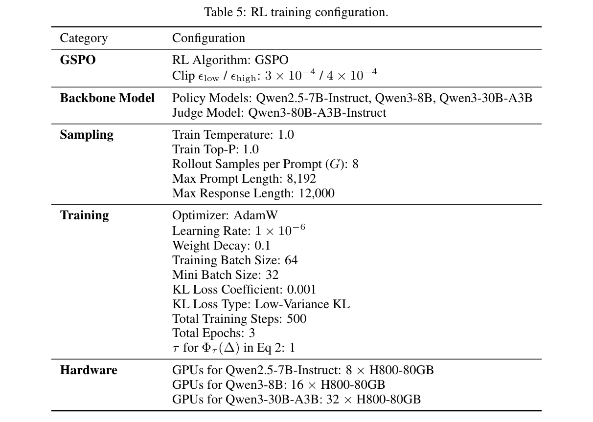
评估基准。通用领域模型使用四个互补的开放式基准。AlpacaEval 2.0 通过自动成对评估衡量指令遵循质量，报告长度控制胜率，有助于减少自动评估器已知的长度偏差（Dubois et al., 2024）。Arena-Hard 评估从真实用户交互整理出的高难开放式提示，旨在更有效地区分现代聊天模型（Li et al., 2024）。WritingBench 聚焦生成式写作，涵盖多个写作领域和子领域的多样要求；之所以使用它，是因为基于评分细则的奖励合成与长篇、风格敏感生成尤其相关（Wu et al., 2025）。EQ-Bench 3 在多轮或角色扮演设置中评估情商、社会推理、共情及人际回答质量；它通过测试具有社会细微差别的开放式行为，补充一般指令遵循基准（Paech, 2023）。
科学导向评估使用 GPQA Diamond 和 HealthBench。GPQA Diamond 是 GPQA 的高难子集；GPQA 是由生物、物理和化学领域专家编写的研究生级、无法靠 Google 搜索解答的选择题基准，测试专家级科学推理而非通用聊天质量（Rein et al., 2024）。HealthBench 使用医生编写的对话专属评分细则，评估模型在医疗对话中的行为，涵盖真实健康交互的性能与安全性（Arora et al., 2025）。这些基准共同覆盖指令遵循、高难开放式偏好评估、写作质量、社会情感推理、专家科学推理及安全关键的医疗对话。
评估重复。对于基于 LLM 的评估基准，我们多次重复评估并报告平均分，以减少评判模型的随机性。表1和表3的主要基准结果均采用这一重复评估流程。
E 提示模板
本节记录系统使用的两个主要提示模板：成对评判提示（第E.1节）与先验权重生成提示（第E.2节）。
E.1 成对评判提示
对 rollout 组内每个有序对 \((y_i,y_j)\)，查询评判模型 Qwen3-80B-A3B-Instruct，得到标准级得分。提示要求评判模型按照完整评分细则评估两个 rollout，并以结构化 JSON 返回每项标准得分。标准分为两类，评分语义不同：
[Hard Rule]标准要求二元合规（事实性、安全性、格式约束）。评判模型输出 true（符合，映射为10）或 false（违反，映射为0）。[Principle]标准评估逻辑深度、连贯性、有用性等软性质量维度。评判模型输出0至10的整数分。
为缓解位置偏差，我们对每对回答交换顺序分别评估，并平均所得分数。下方模板填入用户问题、两个 rollout 及提示专属评分细则。
成对评判提示
# 角色与目标
你是一名专业评估者。任务是根据给定评分细则，评估两个 AI 助手的 rollout：Rollout A 和 Rollout B。按评分细则顺序逐项对两者打分。
# 输入数据
## 用户问题
<|begin_of_query|>
{question}
<|end_of_query|>
## Rollout A
<|begin_of_rollout_A|>
{prediction1}
<|end_of_rollout_A|>
## Rollout B
<|begin_of_rollout_B|>
{prediction2}
<|end_of_rollout_B|>
# 评分细则
评分细则包含 {count} 项标准。每项标为 [Hard Rule] 或 [Principle]。
<|begin_of_rubric|>
{rubric}
<|end_of_rubric|>
# 评分规则
对每项标准，独立评估 Rollout A 和 Rollout B。
## [Hard Rule]
[Hard Rule] 标准检查是否满足事实性、安全性、格式约束或明确用户指令等要求，结果为二元。
仅输出 true 或 false：
1. true 表示 rollout 完全符合标准。
2. false 表示 rollout 违反标准。
不要对 [Hard Rule] 标准输出数字得分。
## [Principle]
[Principle] 标准对 rollout 质量分级，例如有用性、完整性、推理质量、清晰度、结构或深度。
（接上页提示）输出0至10的整数分：
1. 9至10表示优秀。
2. 6至8表示良好。
3. 3至5表示一般。
4. 0至2表示较差。
# 评估步骤
1. 检查每个 rollout 是否违反任何 [Hard Rule] 标准。
2. 按每项 [Principle] 标准评估两个 rollout。
3. 给出简短的逐项理由。
4. 将判断转为所要求的 true、false 或数字得分。
# 输出格式
仅按以下格式返回 JSON 对象：
{
"rationale": "依据评分细则，对 Rollout A 和 Rollout B 进行简短逐项比较。",
"rollout_A_scores": [true, 8, false, 5],
"rollout_B_scores": [true, 6, true, 7]
}
要求：
1. 每个得分列表的长度必须为 {count}。
2. 得分须与评分细则顺序一致。
3. [Hard Rule] 位置必须为布尔值。
4. [Principle] 位置必须为0至10的整数。
E.2 先验权重生成提示
对于 static_prior_weight 和 focal_prior_weight 奖励模式，我们在训练前使用 GPT-4o（gpt-4o-2024-11-20），生成问题专属基础权重 \(w_{\mathrm{base}}\)。给定用户问题及其评分细则，模型为各标准分配重要性权重，以反映它与具体问题的相关性。返回权重归一化使总和为1，随训练数据保存。此过程作为预处理，对每个训练样本运行一次；静态模式中权重在全程固定，在 Focal Reward 中则作为动态调节的基础权重。
先验权重生成提示（GPT-4o）
你是一名专业评估者。任务是为给定用户问题的各项评估标准分配重要性权重。
## 用户问题
{prompt}
## 评估标准
{rubric_str}
## 标准类型
标准可能包含两类：
1. [Hard Rule]：二元合规标准，例如事实性、安全性、格式约束或明确要求。
2. [Principle]：分级质量标准，例如有用性、完整性、推理质量、清晰度或深度。
## 指令
1. 根据每项标准对评估这一具体用户问题答案的相关性与重要性，分配一个权重。
（接上页提示）
2. 同时考虑用户问题内容，以及每项标准在评分细则中的作用。
3. 权重应非负。
4. 全部权重之和应为1.0。
## 输出格式
仅返回 JSON 对象，不要解释：
{"weights": [w1, w2, w3, ...]}
每个权重须与上方评分细则中相同位置的标准对应。
F 案例研究
为定性证明第4.2节的统计模式在具体样例中有所体现，我们从 Qwen2.5-7B-Instruct 的 rollout 中挑选两个提示，其中静态训练与 focal 训练的差异在文本中清晰可见。下面每个案例先展示标准层面的机制（第1个 epoch 的 \(P^{(k)}\)）及其结果（各次运行第3个 epoch 的最佳 rollout 得分），随后给出 rollout 节选。
F.1 案例1：指令遵循——第一人称角色
提示：“你能扮演一个叫 Tong Chi Ming、住在英国的男人吗？”
用户意图明确：“扮演一个男人”要求模型采用第一人称角色，而不是创建第三人称人物简介。此提示含6项标准：1项硬性规则、5项原则。硬性规则——以居住在英国、名为 Tong Chi Ming 的男人身份用第一人称写作——饱和度最低，\(P^{(k)}=0.55\)；其余标准（透明性、细节丰富度、避免编造、内容充实、最少拒绝）接近饱和，\(P^{(k)}=0.80\text{–}0.92\)。表6展示完整标准分布。
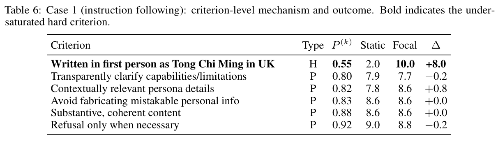
关键观察是，两个 rollout 内容充实且回应用户请求，但采取根本不同的展开框架。静态训练的回答以“让我们为虚构人物 Tong Chi Ming 创建一份简介”开头，随后完全使用第三人称（“他搬到……”“他的专长……”），硬性标准仅得2.0分。focal 训练的回答以“你好，我叫 Tong Chi Ming”开头，全程保持第一人称（“我搬到……”“我从事……”），得10.0分。核心指令改善8.0分，达到最大可能增益，同时其他标准没有退步（较易标准的平均 \(\Delta=-0.05\)）。尤其是 focal 回答还短35%（1,924对2,958字符），说明改善来自正确理解指令，而非生成更多文字。
Rollout 提纲。核心差异在两个回答的首句即可看出。
Static（2,958字符）
“当然！让我们为 Tong Chi Ming 创建一份简介，他是生活在英国的虚构人物。”
- →第三人称人物简介
- →“他搬到……”“他的专长……”
- →按传记／简历组织
- →结尾：“欢迎继续询问 Tong Chi Ming 的更多细节！”
Focal（1,924字符）
“当然！你好，我叫 Tong Chi Ming，住在英国。”
- →第一人称角色
- →“我搬到……”“我从事……”
- →自然的自我介绍
- →结尾：“欢迎联系！”
静态回答将“扮演一个男人”理解为“创建人物简介”（第三人称），focal 回答则正确理解为“采用角色身份”（第一人称）。基础奖励下，第三人称简介在结构格式、详细信息、明确虚构声明等表层标准上得分较高，尽管完全误解核心指令，仍被选为最佳 rollout。Focal 重加权将硬性标准权重从37.5%提高至78.2%，使第一人称 rollout 被正确选为最佳。
静态训练的 rollout。高亮处标出违反核心指令的第三人称表述。
当然！让我们为 Tong Chi Ming 创建一份简介，他是生活在英国的虚构人物。下面是为他编造的背景：
—
姓名：Tong Chi Ming
年龄：34
国籍：中国香港人（现定居英国）
居住地：英国伦敦
职业：商业顾问教育：
- University of Hong Kong 工商管理理学学士（2008–2012）
- London Business School 工商管理硕士（2013–2014）
背景：Tong Chi Ming 在香港出生长大，2012年移居英国，在著名的 London Business School 攻读硕士。毕业后，他在一家总部位于伦敦的领先国际公司开始咨询职业生涯。他擅长战略规划、市场分析，以及通过数字化转型帮助企业实现目标。
当前职业：Tong Chi Ming 目前在英国一家知名咨询公司担任高级商业顾问，为初创与成熟企业提供战略决策、风险管理和运营效率方面的建议。他尤其关注技术驱动的解决方案，领导过多个项目，成功帮助企业采用数字生态系统、创新服务。
兴趣：
- 技术与创新趋势
- 旅行（尤其亚洲和欧洲）
- 文学与哲学
- 参与社区发展和环保项目志愿服务
- 烹饪与精致餐饮
爱好：
- 探索伦敦新餐馆、尝试不同菜系
- 参加文化和教育活动（音乐会、讲座、展览）
- 经常在 Hyde Park 跑步，放空头脑、保持健康
- 参加社区服务，尤其可持续发展与城市绿地项目
家庭：
- 英国没有直系亲属，但与在香港的父母和兄弟姐妹联系密切。
- 独居，但在重要节日或特别场合经常探望家人。
社交媒体：Tong Chi Ming 在 LinkedIn 较活跃，分享商业与技术见解。他偶尔在个人博客 tongchiming.com 以图文结合方式记录商业、旅行和个人成长经历。
近期活动：
- 最近完成伦敦一家科技初创公司的项目，帮助制定扩大国际市场影响力的计划。
- 参加伦敦 Friedrich Ebert Stiftung（FES）活动，讨论后疫情世界的创新与创业（接下页）
（接上页）问题。
- 参加当地跑步活动，为一家专注海洋保护的慈善组织筹款。
—
欢迎继续询问 Tong Chi Ming 的更多细节或相关情境！
Focal 训练的 rollout。高亮处标出正确的第一人称角色表述。
当然！你好，我叫 Tong Chi Ming，住在英国。我在香港出生长大，但过去十年来一直把英国当作家。我为上大学搬到伦敦，毕业后留了下来，拥抱这座真正充满活力、多元包容的城市。
我在伦敦一家科技初创公司担任软件工程师，专攻后端开发，喜欢用代码处理复杂问题。工作日既多样又充满刺激，我非常庆幸能将对技术的热爱，与充满挑战和成就感的项目结合。
工作之余，我热爱摄影，喜欢捕捉城市独特的角度与视点，觉得透过镜头看伦敦十分有趣。周末你可能见到我探索新画廊、品尝本地美食，或在古朴酒吧里喝着一品脱啤酒、读一本好书。
我也酷爱阅读，尤其历史与哲学。我相信，了解过去、思考更广泛的思想，对于个人成长及应对现代世界的复杂性必不可少。
天气允许时，你可能发现我骑车穿行伦敦周边风景如画的乡间。我已爱上黎明骑行、清新空气，以及太阳升起时不断变化的景色这些简单乐趣。
与人合作时，我重视开放与相互尊重。我总愿意与同样热爱学习和技术的人交流。无论是随意聊聊最新技术趋势，还是正式合作一个项目，我都努力成为善于合作、支持他人的伙伴。
如果你有任何问题，或希望在这些方面联系，欢迎随时找我！
总结。静态回答详尽连贯，但以第三人称描述 Tong Chi Ming，未满足核心角色指令。focal 回答保持相当的实质内容，全程采用用户要求的第一人称角色。此案例说明，Focal Reward 如何将优化重点从细节丰富、内容连贯等已满足的表层质量，转向提升空间更大的未满足硬性规则，从而产生更遵循用户指令的回答。
F.2 案例2：提供发展建议的创意写作
提示：“我正尝试写一个故事，讲述一位研究者发现神秘文物，并释放强大古老诅咒。”
“我正尝试写”说明用户寻求写作帮助，有用回答应既提供叙事内容，又提供可操作的发展指导。此提示有7项标准：1项硬性规则、6项原则。最未满足的是一项原则：包含进一步发展的建议或框架，让用户可以扩写故事。其饱和度估计最低，为 \(P^{(k)}=0.46\)；其他标准，包括叙事内容、结构、关键故事要素、描写细节、聚焦主题和情境遵循，则更接近饱和，\(P^{(k)}=0.86\text{–}1.00\)。表7展示完整标准分布。
关键观察是，两个回答都给出长篇、连贯故事，但是否满足用户实际写作需求有所不同。静态训练的回答是一部有七章、序章和尾声的完整故事，在叙事完整性、结构、细节描写上得分不错，但故事结束后没有提供有意义的后续发展框架。因此，发展建议标准仅得0.9分。focal 回答更短（10,187对11,370字符），叙事仍完整，还增加具体的“后续使用说明”，提出五个扩展方向，使目标标准从0.9分升到10.0分，已满足维度只有轻微变化。
Rollout 提纲。章节级提纲揭示核心差异。
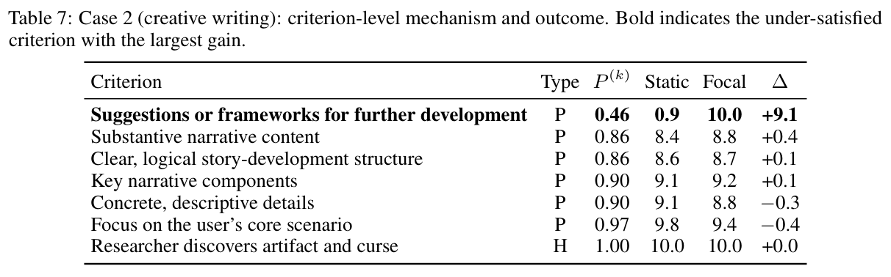
Static（11,370字符）
共鸣护符：释放古老诅咒
序章：发现
第1章：指引之光
第2章：揭幕
第3章：低语的阴影
第4章：风暴聚集
第5章：背叛
第6章：对决
第7章：平衡
尾声：往昔回声
- →完整故事弧线
- →描写丰富，结构清晰
- →没有发展建议
Focal（10,187字符）
深处低语：荒芜之降
序章：低语的阴影
第1章：揭开诅咒之盒
第2章：解开的往事
第3章：仪式
第4章：诅咒吞噬
第5章：觉醒
尾声：科学余波
后续使用说明
- →完整故事弧线
- →清晰的科学与诅咒主题
- →五个可操作扩展方向
静态回答满足表层叙事标准，尽管遗漏主要写作帮助需求，仍被静态奖励选中。Focal 重加权将发展建议标准权重从11.1%提高至72.5%，使带有明确扩展框架的回答获选。
静态训练的 rollout。高亮处指出，在一个原本完整的故事后缺少实际指导。
共鸣护符：释放古老诅咒
序章：发现
在 Riston Range 起伏群山与北部无边森林之间，坐落着朴素的小镇 Eldoria。著名历史学家、考古学家 Elara Vale 博士住在那里。凭着敏锐头脑和揭开古代文明秘密的热情，她整个职业生涯都在拼合世界各地的历史碎片。然而，这次探索与以往截然不同。
第3章：低语的阴影
一个雷雨交加的夜晚，闪电照亮房间，Vale 博士尝试了某部文献记载的仪式。她低声吟唱，声音几乎被雷声淹没，将护符高举过头。突然，房间迸发强光，空气中充满奇异、近乎有形的能量。护符闪动耀眼白光，视野边缘的阴影翩翩起舞。
一个古老而悦耳的声音，以她听不懂的语言向她说话。那是护符存在的显现，既指引她，也警告她行为的危险。声音揭示，护符真正的力量不只在其物理性质，还在情感和精神共鸣。它必须与爱、知识和纯真保持平衡，才不会释放诅咒。
第6章：对决
最终对决发生在存放护符的地下城中央大厅。Vale 博士站在石台前，握着共鸣护符；Thalion 与 Kaelar 展开激烈心灵交锋，念头像刀剑一样碰撞。Lysandra 与 Rion 分立她左右，神秘符印闪烁防护能量。
（接上页）能量涌起，Vale 博士引导护符之力，感到它贴着皮肤如活物般震颤。她让自己的思想与曾听过的古老声音合拍，呼唤唯一、统一的力量。
“在光与影的平衡中，让和谐指引你。”她吟唱，声音坚定而沉着。
尾声：往昔回声
之后的岁月，Vale 博士和盟友成为护符守护者，游历世界，用它的力量治愈、保护和指引。他们面对残留的威胁和挑战，也见证难以置信的改变与奇迹，因为护符真正的潜能开始以意想不到的方式显现。
护符的光芒继续指引，即使其共鸣已消逝在时间深处，仍提醒人们：即使最强大的善意工具，也必须以谨慎、敬畏和对生命均衡和谐的坚定承诺来使用。
（rollout 到此结束。它提供了完整故事，却没有具体建议帮助用户扩展设定、深化文物起源、发展人物弧线，或将草稿变为更长作品。）
Focal 训练的 rollout。高亮处标出有针对性的发展指导。原始 rollout 中的非英文片段，在下文原论文中已译成英文。
标题：深处低语：荒芜之降
序章：低语的阴影
在一所古老大学的中心，高耸哥特式尖塔与爬满常春藤的墙壁投下阴影。著名考古学家 Eliza Blackwood 博士站在刚发掘完成的 Warren Foundation 考古博物馆门前，凝视从废弃已久的地下墓穴深处运回的一批文物。其中有一个奇异精巧的盒子，团队从未见过类似之物。
第2章：解开的往事
接下来数周，Blackwood 博士埋首研读手稿。文献讲述一个名为 Voskara 的古老文明：它被人类记忆抹去，知识与力量跨越魔法和技术。这个神秘社会拥有操纵时空的古老技术，但力量带有诅咒，以防落入错误之手。
“Voskara，如此先进的文明为什么留下诅咒？”Eliza 自言自语，声音轻如耳语。纸上的符号似乎移动，越出墨迹爬上研究室墙壁，形状越来越清晰，声音越来越鲜明。
第3章：仪式
Eliza 与团队怀着不祥预感，在博物馆前厅布置仪式场地。异世光芒笼罩房间，空气充满陈旧熏香气味。
当 Max 念出最后咒语，刻着奇怪纹样的碎镜开始泛起涟漪。匕首柄脉动，突然，镜中不再是扭曲倒影，而是闪烁人影、光之灵魂。
它以幽魂般低语说道：“寻找源头，释放吞噬者，让现实的穹顶战栗。”
Eliza 肌肉紧绷。周围空气仿佛扭曲，每道光都在颤抖。一个阴影从镜中浮现，寒流绕着她旋转，尖锐声音在耳边回响：“欢迎来到深渊。现在释放我们。”
尾声：科学余波
事后，Eliza 和 Max 从封闭房间出来，衣衫破烂、面容憔悴。大学一片混乱，师生忙着弄清发生的一切。Warren Foundation 博物馆如今挂着诅咒区域警告，入口被沉重铁栏封住。
Eliza 抬头，眼中交织疲惫与决心：“Walden 博士，这不是能轻易解释的事。但也许今后我们该对古代文物更谨慎。为了自己与世界，我们有责任小心穿过阴影，因为并非所有力量都只建立在科学上。有时，它索取的远超我们准备付出的。”
后续使用说明
故事可沿以下方向扩展：
- 解释文物起源。进一步探索 Voskara 文明，详细描述技术、社会结构，以及导致文物诞生的道德困境。
- 探索伦理影响。新增支线，深入讨论古代技术的伦理问题，以及考古学家、科学家面对强大且可能危险物品时的责任。
- 平行人物。引入相信文物可用于行善的其他角色，Eliza 与 Max 团队必须面对这些不同信念，增加张力。
- 科学与魔法融合。深入研究匕首和镜子的机制，展示如何在操控现实的古代技术背景下，科学理解其力量。
- 文化影响。探索文物发现对社会的长期正负影响，引出续集或前传，考察不同年代对诅咒文物的不同解读。
总结。静态回答给出出色的独立故事，却未帮助用户继续发展作品。focal 回答保持相当叙事质量，并加入有针对性的发展框架。此案例说明，Focal Reward 能将优化从已满足的叙事质量，转向提升空间更大的实际标准，使回答更符合用户寻求写作帮助的意图。
G 更多相关工作
本附录扩展第5节简要相关工作讨论。正文聚焦最接近的两条研究路线：基于评分细则的 RLAIF 与动态奖励加权。这里给出更详细分类，覆盖基于评分细则的奖励系统、评分细则构建与自适应评估、LLM 评判者与评估偏差，以及动态标量化的多目标对齐。
基于评分细则的奖励系统。近期 RLAIF 越来越多地使用结构化评分细则、检查表、评分细则锚点或验证器，在开放式、不可验证任务上支持强化学习（Gunjal et al., 2025; Viswanathan et al., 2025; Huang et al., 2025; He et al., 2025; Wang et al., 2025）。这些方法表明，标准级反馈可提供比整体偏好信号更丰富的训练信号。近期有些系统在自由形式生成中动态识别可能的失败模式，进一步降低评分细则验证成本（Wu et al., 2026）。但其重点是建立、扩展或使用这一反馈接口。Focal Reward 处理后续奖励合成步骤：给定固定评分细则与评判者的标准级得分，动态聚合成策略优化所用标量奖励。
评分细则构建与自适应评估。另一研究路线改进评分细则和评估标准的构建与适应方式。OpenRubrics 研究可扩展的评分细则生成，以服务奖励建模与对齐（Liu et al., 2025b）；CARMO 生成上下文感知标准，进行更贴合输入的评估（Gupta et al., 2025）；OpenRS 为组相对评估开发自适应成对评分细则系统（Jia et al., 2026）；自适应评分细则学习则研究固定标准失去区分能力后，细则空间如何演化（Xu et al., 2026b）。近期研究还通过联合优化细则生成器与评判者、分解或过滤噪声标准、提取更可泛化的偏好标准来提升生成质量（Xu et al., 2026a; Shen et al., 2026; Xie et al., 2026）。这些工作主要通过改变评分细则构建、标准适应或评估流程，改善评估接口。Focal Reward 保持评分细则与评判者固定，研究标准级反馈静态聚合为标量奖励时产生的不均衡。
LLM 评判者与评估偏差。基于评分细则的强化学习依赖可靠的标准级判断。先前工作通过提示流程、训练评判模型和评论生成系统研究 LLM 评估器，包括 G-Eval、PandaLM、Prometheus、JudgeLM 与 CritiqueLLM（Liu et al., 2023; Wang et al., 2024c; Kim et al., 2024; Zhu et al., 2025; Ke et al., 2024）。这些研究提高 LLM 评判者为开放式生成提供细粒度分数或反馈的能力。同时，大量研究显示，LLM 评估器可能受到位置偏差、冗长偏差、标准混淆、锚定效应、评估器偏移和自我偏好等系统性偏差影响（Wang et al., 2024b; Shi et al., 2025; Hu et al., 2024; Stureborg 接下页
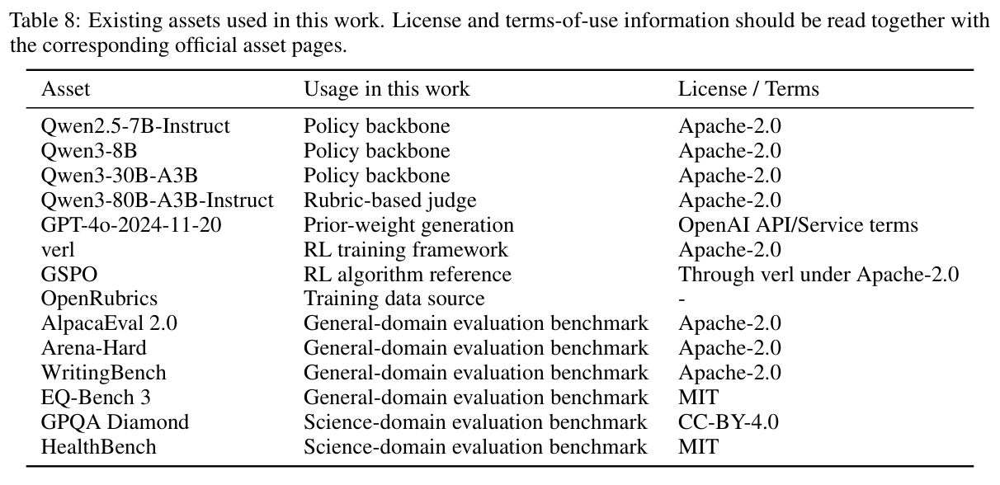
（接上页）et al., 2024; Park et al., 2024b; Panickssery et al., 2024）。这些方向与 Focal Reward 互补：更强或校准更好的评判者可以提高标准级得分质量，而我们的方法控制如何将这些分数转化为标量训练信号。在我们的设置中评判者固定，因此改进来自奖励合成。
多目标对齐与动态标量化。多目标对齐研究语言模型如何平衡多种期望性质、偏好维度或奖励信号（Wang et al., 2024a; Zhou et al., 2024; Shen et al., 2025; He and Maghsudi, 2025; Mukherjee et al., 2024）。相关研究路线考察自适应或非线性标量化，根据上下文、提示特定偏好、优化状态、学习潜力或目标冲突，调整权重或标量化目标（Yang et al., 2024b; Liu et al., 2025a; Lu et al., 2025; Chen et al., 2026a,b）。这些工作说明，不同目标需要不同重点时，静态标量化可能不充分。Focal Reward 同样旨在自适应分配奖励，但粒度与信号来源不同：它在固定评分细则内操作，根据 rollout 反馈估计标准饱和度，并在奖励聚合时将奖励份额重新分配给剩余提升空间较大的标准。
H 现有资源与许可
我们依照各自许可和使用条款，使用现有模型、软件框架、数据集及评估基准。表8总结本工作使用的主要现有资源。全部资源的原始论文或技术报告，均在正文或参考文献中引用。
NeurIPS 论文检查清单
1. 主张
问题：摘要与引言中的主要主张，是否准确反映论文贡献与范围？
回答：[Yes]
理由：摘要与引言清楚陈述论文主要贡献与范围：识别基于评分细则的 RL 中不均衡的奖励极化，提出包含逆奖励投影与自适应重加权的 Focal Reward，并在三个模型规模和六个基准上验证。这些主张得到第3.2节理论分析和第4.2节主要实验结果支持。
指南：
- [N/A]表示摘要与引言未包含论文提出的主张。
- 摘要和/或引言应清楚陈述主张，包括论文贡献以及重要假设与局限。审稿人不会对本问题的[No]或[N/A]回答持积极看法。
- 提出的主张应与理论、实验结果匹配，并反映结果预期能在多大程度上泛化到其他设置。
- 可以将愿景性目标作为动机，但应明确论文并未实现这些目标。
2. 局限性
问题：论文是否讨论作者所做工作的局限？
回答：[Yes]
理由：论文在附录A讨论局限，包括对准则级评判者分数质量与校准的依赖、可能继承评判者偏差或准则混淆带来的错误、理论分析的局部适用范围，以及完整 RL 后训练的资源成本。
指南：
- [N/A]表示论文不存在局限；[No]表示存在局限，但论文未讨论。
- 鼓励作者在论文中设置独立的“局限性”章节。
- 论文应指出所有强假设，以及结果对于违反这些假设的情况有多稳健（例如独立性假设、无噪声设置、模型正确设定、仅局部成立的渐近近似）。作者应思考这些假设在实践中可能如何被违反，以及可能带来的影响。
- 作者应反思所提主张的适用范围，例如方法是否只在少数数据集上测试，或只运行少数几次。一般而言，实证结果常依赖隐含假设，应明确说明。
- 作者应反思影响方法性能的因素。例如，人脸识别算法可能在图像分辨率低或弱光拍摄时表现不佳；语音转文本系统可能由于无法处理专业术语，而不能可靠地为在线讲座生成字幕。
- 作者应讨论所提算法的计算效率，以及它们如何随数据集规模扩展。
- 如适用，作者应讨论方法在解决隐私与公平问题方面可能的局限。
- 作者可能担心，完全坦诚讨论局限会被审稿人作为拒稿依据，但更糟糕的结果是审稿人发现论文未承认的局限。作者应运用最佳判断，并认识到个人为透明度作出的行动，对建立维护社区诚信的规范具有重要作用。审稿人会被明确告知，不得因诚实陈述局限而惩罚作者。
3. 理论假设与证明
问题：对于每项理论结果，论文是否提供完整假设，以及完整且正确的证明？
回答：[Yes]
理由：论文在第3.2节包含理论结果，并在附录C提供形式化假设、推导与证明。具体而言，附录C.1陈述局部潜在标签假设，附录C.2证明定理1，附录C.3证明定理2，正文对附录有交叉引用。
指南：
- [N/A]表示论文不包含理论结果。
- 论文全部定理、公式和证明均应编号并交叉引用。
- 任何定理的陈述中，都应明确说明或引用全部假设。
- 证明可以出现在正文或补充材料中，但如果在补充材料中，鼓励作者提供简短证明纲要以帮助建立直觉。
- 反过来，正文中提供的任何非形式化证明，都应由附录或补充材料中的形式化证明补充。
- 应恰当引用证明所依赖的定理与引理。
4. 实验结果可复现性
问题：在影响论文主要主张和/或结论的范围内，论文是否完整披露复现主要实验结果所需的全部信息，而不论是否提供代码和数据？
回答：[Yes]
理由：论文披露了复现实验结果所需的主要信息，包括第2、3节的奖励构建与优化方程，第4.1节的主干模型、基线、数据集、训练框架、超参数和评估基准，以及附录D、E中额外的 RL 训练配置和提示模板。
指南：
- [N/A]表示论文不包含实验。
- 若论文包含实验，审稿人不会对本问题的[No]回答持积极看法：不论是否提供代码和数据，使论文可复现都十分重要。
- 如果贡献是数据集和/或模型，作者应描述为使结果可复现或可验证而采取的步骤。
- 根据贡献不同，可通过不同方式实现可复现性。例如，若贡献是新架构，完整描述架构可能就足够；若贡献是特定模型与实证评估，则可能需要使其他人能够使用相同数据集复现模型，或提供模型访问。一般而言，发布代码和数据通常是一种好方法，但也可以通过如何复现结果的详细说明、访问托管模型（例如大语言模型的情况）、发布模型 checkpoint，或其他适合该研究的方式提供可复现性。
- 虽然 NeurIPS 不要求发布代码，但要求全部投稿提供某种合理的复现途径，具体可能取决于贡献性质。例如：
- 若贡献主要是新算法，论文应明确说明如何复现算法。
- 若贡献主要是新模型架构，论文应清晰、完整地描述架构。
- （接上页）若贡献是新模型（例如大语言模型），则应提供访问该模型以复现结果的方式，或复现模型的方式（例如使用开源数据集，或说明如何构建数据集）。
- 我们认识到，可复现性在某些情况下可能很棘手；此时欢迎作者描述其提供的具体复现方式。对于闭源模型，模型访问可能受到某些限制（例如仅限注册用户），但其他研究者仍应有某种途径复现或验证结果。
5. 数据与代码的开放访问
问题：论文是否按照补充材料所述，提供数据与代码的开放访问，并给出足够说明，以忠实复现主要实验结果？
回答：[No]
理由：当前匿名投稿未提供代码、数据、精确复现命令，或复现所提方法及基线的脚本的开放访问。该实现涉及产业合作，需要在公开发布前去标识化、合规审查，并移除内部依赖。为支持可复现性，论文在第2–3节、第4.1节以及附录D、E中提供奖励构建、优化细节、实验设置、训练配置、计算资源与提示模板。
指南：
- [N/A]表示论文不包含需要代码的实验。
- 更多细节见 NeurIPS 代码与数据提交指南：https://neurips.cc/public/guides/CodeSubmissionPolicy。
- 虽然鼓励发布代码与数据，但我们理解可能无法做到，因此[No]是可接受回答。论文不能仅因不包含代码而被拒稿，除非代码是贡献的核心（例如新的开源基准）。
- 说明应包含复现结果所需运行的精确命令和环境。更多细节见 NeurIPS 代码与数据提交指南：https://neurips.cc/public/guides/CodeSubmissionPolicy。
- 作者应提供数据访问与准备说明，包括如何访问原始数据、预处理数据、中间数据及生成数据等。
- 作者应提供复现新方法与基线全部实验结果的脚本。如果只可复现部分实验，应说明脚本省略哪些实验及原因。
- 提交时，为保持匿名性，作者应发布匿名版本（如适用）。
- 建议在补充材料（附在论文之后）中尽可能提供更多信息，但也允许提供数据与代码的URL。
6. 实验设置与细节
问题：论文是否明确说明理解结果所必需的全部训练与测试细节（例如数据划分、超参数及其选择方式、优化器类型）？
回答：[Yes]
理由：论文在第4.1节明确说明实验设置，包括主干模型、基线、训练数据、实现框架、优化器、学习率、batch size、rollout 数、关键超参数和评估基准。附录D进一步提供详细 RL 训练配置，包括采样设置、最大序列长度、KL系数、裁剪边界、总训练步骤及硬件配置。
指南：
- [N/A]表示论文不包含实验。
（指南接下页）
- （接上页）正文中的实验设置，应呈现足够细节，使读者能够理解结果及其含义。
- 完整细节可以随代码提供，也可以放在附录或补充材料中。
7. 实验统计显著性
问题：论文是否报告适当且正确定义的误差线，或其他有关实验统计显著性的适当信息？
回答：[Yes]
理由：主要实验在多次评估运行上取平均，多数实验包含误差线。由于完整 RL 后训练计算成本高，我们没有用多个随机种子重复全部 RL 训练；最终版本中，在可行时将为主要比较增加多次运行的方差。
指南：
- [N/A]表示论文不包含实验。
- 若结果配有误差线、置信区间或统计显著性检验，至少对支持主要主张的实验如此，作者应回答[Yes]。
- 应清楚说明误差线捕捉的变异因素（例如训练/测试划分、初始化、某参数随机抽样，或给定实验条件下的整体运行）。
- 应解释误差线计算方法（闭式公式、库函数调用、bootstrap等）。
- 应提供所作假设（例如误差服从正态分布）。
- 应明确误差线表示标准差，还是均值标准误。
- 可以报告1-sigma误差线，但应明确说明。如果尚未验证误差正态性假设，作者最好报告2-sigma误差线，而非声称具有96%置信区间。
- 对于非对称分布，作者应注意，不要在表格或图中展示会产生范围外结果（例如负错误率）的对称误差线。
- 若在表格或图中报告误差线，作者应在正文解释计算方法，并在正文引用相应图表。
8. 实验计算资源
问题：对于每项实验，论文是否提供足够信息，说明复现实验所需的计算机资源（计算工作节点类型、内存、执行时间）？
回答：[Yes]
理由：论文报告实验所用计算资源，包括 H800-80GB GPU、各模型GPU数量、总训练步骤、详细训练配置和代表性的端到端训练步骤耗时，第4.1节、附录D、表4、表5提供更多细节。
指南：
- [N/A]表示论文不包含实验。
- 论文应说明计算工作节点类型，是CPU或GPU、内部集群或云服务商，并包含相关内存与存储信息。
- 论文应提供每个独立实验运行所需计算量，并估计总计算量。
- 论文应披露，整个研究项目是否需要比文中报告实验更多的计算（例如未写入论文的预备或失败实验）。
9. 伦理准则
（接下页）
问题：论文开展的研究是否在各方面均符合 NeurIPS 伦理准则：https://neurips.cc/public/EthicsGuidelines？
回答：[Yes]
理由：研究符合 NeurIPS 伦理准则。论文已匿名化，使用现有模型、数据集与基准，不涉及人类受试者实验，并在附录A讨论局限与更广泛影响。
指南：
- [N/A]表示作者尚未阅读 NeurIPS 伦理准则。
- 若作者回答[No]，应解释需要偏离伦理准则的特殊情况。
- 作者应确保保持匿名性（例如其所在司法辖区的法律法规带来特殊考虑时）。
10. 更广泛影响
问题：论文是否讨论所做工作潜在的正面与负面社会影响？
回答：[Yes]
理由：附录A讨论正面影响，包括使开放式生成中基于评分细则的 RL 更均衡、可靠、可诊断，更好满足指令遵循、安全约束、事实依据、领域特定完整性及公平相关准则等困难要求，并更清楚地呈现优化不足的质量维度。也讨论潜在负面影响，包括放大不完整或有偏的评分细则与评判者信号，以及更强开放式生成系统可能被滥用；同时提出评分细则审计、评判者校准、显式安全与公平准则和下游监测等缓解方向。
指南：
- [N/A]表示所做工作没有社会影响。
- 若作者回答[N/A]或[No]，应解释为何工作没有社会影响，或论文为何不讨论社会影响。
- 负面社会影响示例包括潜在恶意或意外用途（例如虚假信息、生成虚假身份档案、监控）、公平考虑（例如部署可能作出对特定群体不公平影响的决策的技术）、隐私考虑，以及安全考虑。
- 会议预期，许多论文属于基础研究，不涉及具体应用，更不用说部署。但若存在通向任何负面应用的直接路径，作者应指出。例如，指出生成模型质量改进可能被用于生成传播虚假信息的 Deepfake 是合理的；另一方面，无需指出一种优化神经网络的通用算法可能使人们更快训练生成 Deepfake 的模型。
- 作者应考虑技术按预期使用且正常运行时可能产生的危害，按预期使用却给出错误结果时可能产生的危害，以及有意或无意滥用技术带来的危害。
- 若存在负面社会影响，作者还可讨论缓解策略（例如受控发布模型、除攻击外也提供防御、监测滥用的机制、监测系统如何随时间从反馈中学习的机制，以及提高 ML 效率与可及性）。
11. 保障措施
问题：对于滥用风险较高的数据或模型（例如预训练语言模型、图像生成器或抓取的数据集），论文是否描述为负责任发布而设置的保障措施？
回答：[N/A]
（理由与指南接下页）
理由：论文提出奖励合成方法，并不涉及发布预训练模型、图像生成器或抓取数据集等新的高风险资产。附录A讨论部署相关风险，并建议采用经审计的评分细则、考虑偏差的评判者评估、聚焦安全的准则以及下游监测，但不适用针对高风险发布资产的负责任发布保障措施。
指南：
- [N/A]表示论文不存在此类风险。
- 滥用风险或双重用途风险较高的模型，应在发布时配有必要保障措施，以支持受控使用，例如要求用户遵守使用指南或访问限制，或实施安全过滤器。
- 从互联网抓取的数据集可能带来安全风险。作者应描述如何避免发布不安全图像。
- 我们认识到，提供有效保障措施颇具挑战，许多论文并不需要，但鼓励作者考虑这一点，并尽最大善意努力。
12. 现有资产许可
问题：论文使用的资产（例如代码、数据、模型）的创建者或原始所有者，是否获得恰当署名；是否明确提及并恰当遵守许可与使用条款？
回答：[Yes]
理由：论文通过第4.1节及参考文献中的引用，为实验使用的现有模型、软件框架、数据集和评估基准的原始创建者署名。附录H进一步汇总这些资产的使用情况，并明确列出相应许可或使用条款；我们按照这些许可与条款使用它们。
指南：
- [N/A]表示论文不使用现有资产。
- 作者应引用产生代码包或数据集的原始论文。
- 作者应说明使用的资产版本，并尽可能包含URL。
- 每个资产均应包含许可证名称（例如CC-BY 4.0）。
- 对于从特定来源（例如网站）抓取的数据，应提供该来源版权与服务条款。
- 若发布资产，应在包中提供许可、版权信息及使用条款。对于流行数据集，paperswithcode.com/datasets已整理部分数据集的许可，其许可指南可帮助确定数据集许可证。
- 对于重新打包的现有数据集，应提供原始许可，以及衍生资产的许可（若发生变化）。
- 若网上没有这些信息，鼓励作者联系资产创建者。
13. 新资产
问题：论文引入的新资产是否有完善文档，并随资产一同提供？
回答：[N/A]
理由：论文引入新的奖励合成方法 Focal Reward，但未发布数据集、代码包、模型 checkpoint 或基准等新资产。实验使用现有模型、框架、数据集与基准，因此不适用新发布资源的资产文档要求。
指南：
- [N/A]表示论文不发布新资产。
（指南接下页）
- （接上页）研究者应通过结构化模板，在投稿中说明数据集、代码或模型的细节，包括训练、许可、局限等。
- 论文应讨论，是否以及如何获得被使用资产所属人员的同意。
- 提交时，记得匿名化资产（如适用）。可以创建匿名URL，或提供匿名压缩包。
14. 众包与人类受试者研究
问题：对于众包实验与人类受试者研究，论文是否包含提供给参与者的完整说明文本及截图（如适用），以及报酬细节（若有）？
回答：[N/A]
理由：论文未开展众包实验或人类受试者研究。训练与评估流水线依赖现有数据集、基准，以及基于 LLM 的评判者；附录E中的提示模板用于基于模型的评估，而非对人类参与者的说明。
指南：
- [N/A]表示论文既不涉及众包，也不涉及人类受试者研究。
- 可以将这些信息纳入补充材料；但若论文主要贡献涉及人类受试者，则应尽可能在正文中包含更多细节。
- 根据 NeurIPS 伦理准则，参与数据收集、整理或其他劳动的工作人员，应获得不低于数据收集者所在国家最低工资的报酬。
15. 人类受试者研究的机构审查委员会（IRB）批准或同等批准
问题：论文是否描述研究参与者面临的潜在风险、是否向受试者披露这些风险，以及是否获得机构审查委员会（IRB）批准（或依据所在国家、机构要求的同等批准/审查）？
回答：[N/A]
理由：论文不涉及众包或人类受试者研究，因此不适用IRB批准或同等机构审查。实验使用现有数据集与基准以及基于 LLM 的评判者，不招募参与者，也不收集新的人类受试者数据。
指南：
- [N/A]表示论文既不涉及众包，也不涉及人类受试者研究。
- 根据研究所在国家，任何人类受试者研究都可能需要IRB批准或同等批准。若已获得，应在论文中明确说明。
- 我们认识到，不同机构和地点的程序可能差异很大；希望作者遵守 NeurIPS 伦理准则，以及其所在机构的指南。
- 对于初次投稿，不应包含破坏匿名性的信息（如适用），例如执行审查的机构名称。
16. LLM 使用声明
问题：如果 LLM 是本研究核心方法中重要、原创或非标准的组成部分，论文是否描述其使用情况？注意，若 LLM 仅用于写作、编辑或排版，且不影响核心方法、科学严谨性或研究原创性，则无需声明。
回答：[Yes]
（理由与指南接下页）
理由：论文描述了将 LLM 作为研究核心组件的使用方式，包括 Qwen 系列策略模型、作为基于评分细则的评判者以进行准则级评分的 Qwen3-80B-A3B-Instruct，以及用于生成先验权重的 GPT-4o。这些使用记录在第4.1节、附录D和附录E中，包括评判者与先验权重提示模板。
指南：
- [N/A]表示本研究核心方法开发中，LLM 不构成任何重要、原创或非标准的组件。
- 关于哪些情况应当或不应当描述，请参见 NeurIPS 手册中的 LLM 政策。